問題文はPDFから抽出したテキストです。図表・イラストが必要な問題は、各問の「PDF紙面を表示」を開いて確認してください。採点は現場調査部門の問1〜102すべてを対象にします。平成29年度の解答は画像PDFの現場調査部門表を転記しています。
問1
必須
1. 次は，地質調査技士資格及び国土交通省の地質調査業者登録規程について述べたものである。
不適切なもの一つを選び記号（(1)～(4)）で示せ。
(1) 地質調査技士資格は，国土交通省の地質調査業務共通仕様書において，業務内容により主
任技術者の資格として認められている。
(2) 地質調査技士資格は，国土交通省をはじめ，その他多くの発注機関で発注要件として活用
されている。
(3) 地質調査業者登録規程の登録要件には，財産的要件が定められている。
(4) 地質調査業者登録規程における登録が無い場合，地質調査業を営むことはできない。
正解（4） 一般事務局Ａ01
図表・イラスト確認用：PDF紙面（2ページ）を表示
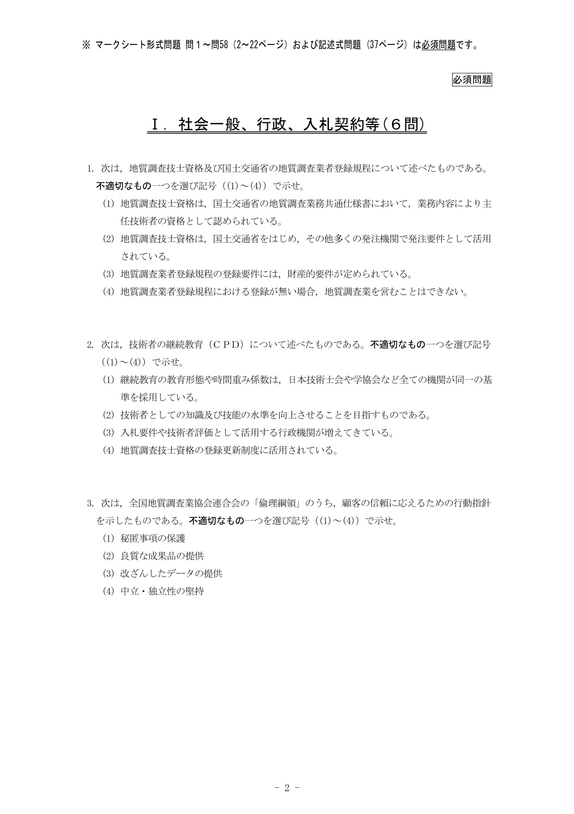
問2
必須
2. 次は，技術者の継続教育（ＣＰＤ）について述べたものである。不適切なもの一つを選び記号
（(1)～(4)）で示せ。
(1) 継続教育の教育形態や時間重み係数は，日本技術士会や学協会など全ての機関が同一の基
準を採用している。
(2) 技術者としての知識及び技能の水準を向上させることを目指すものである。
(3) 入札要件や技術者評価として活用する行政機関が増えてきている。
(4) 地質調査技士資格の登録更新制度に活用されている。
正解(1)：一般事務局Ａ02
図表・イラスト確認用：PDF紙面（2ページ）を表示
問3
必須
3. 次は，全国地質調査業協会連合会の「倫理綱領」のうち，顧客の信頼に応えるための行動指針
を示したものである。不適切なもの一つを選び記号（(1)～(4)）で示せ。
(1) 秘匿事項の保護
(2) 良質な成果品の提供
(3) 改ざんしたデータの提供
(4) 中立・独立性の堅持
解答：(3) 一般石井A03
- 3 -
必須問題
図表・イラスト確認用：PDF紙面（2ページ）を表示
問4
必須
4. 次は，「地すべり等防止法」について述べたものである。不適切なもの一つを選び記号（(1)～
(4)）で示せ。
(1) 地すべり防止区域の指定は，必要に応じ，地形，地質，降水，地表水若しくは地下水又は
土地の滑動状況に関する現地調査をして行うものとする。
(2) 地すべり防止工事の施行その他地すべり防止区域の管理は，当該地すべり防止区域の存す
る都道府県の意見をきいて，すべて国が行うものとする。
(3) 「地すべり」とは，土地の一部が地下水等に起因してすべる現象又はこれに伴って移動す
る現象をいう。
(4) この法律は，地すべり及びぼた山の崩壊による被害を除却し，又は軽減するため，地すべ
り及びぼた山の崩壊を防止し，国土の保全と民生の安定に資することを目的とする。
解答：(2) 一般石井A04
図表・イラスト確認用：PDF紙面（3ページ）を表示
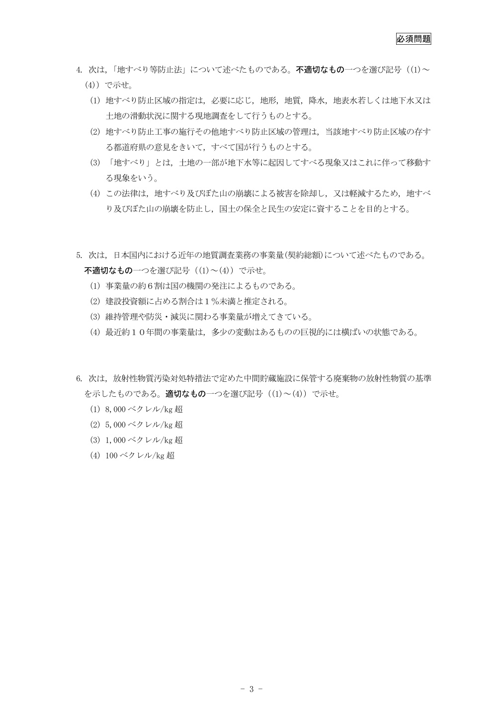
問5
必須
5. 次は，日本国内における近年の地質調査業務の事業量(契約総額)について述べたものである。
不適切なもの一つを選び記号（(1)～(4)）で示せ。
(1) 事業量の約６割は国の機関の発注によるものである。
(2) 建設投資額に占める割合は１％未満と推定される。
(3) 維持管理や防災・減災に関わる事業量が増えてきている。
(4) 最近約１０年間の事業量は，多少の変動はあるものの巨視的には横ばいの状態である。
正解(1) 一般事務局Ａ05
図表・イラスト確認用：PDF紙面（3ページ）を表示
問6
必須
6. 次は，放射性物質汚染対処特措法で定めた中間貯蔵施設に保管する廃棄物の放射性物質の基準
を示したものである。適切なもの一つを選び記号（(1)～(4)）で示せ。
(1) 8,000 ベクレル/kg 超
(2) 5,000 ベクレル/kg 超
(3) 1,000 ベクレル/kg 超
(4) 100 ベクレル/kg 超
正答 (1) 地下水打木放射線1
- 4 -
必須問題
Ⅱ．地質、測量、土木、建築等の知識(８問)
図表・イラスト確認用：PDF紙面（3ページ）を表示
問7
必須
7. 次は，河川の作用で形成された沖積平野の代表的な地形とその特徴について述べたものである。
不適切なもの一つを選び記号（(1)～(4)）で示せ。
記号
地形
特徴
(1)
三角州
河水によって運搬されてきた土砂が，湖や河口などの静水域に
堆積してできた低くて平らな地形
(2)
天井川
河川内に多量の砂・礫が堆積して，河床面が周辺の平野面より
高くなった河川
(3)
後背湿地
自然堤防の背後に広がり，洪水がしばらく滞留したことによる
沼沢性の低湿地
(4)
扇状地
河水によって運搬されてきた土砂が，高水，洪水などの際に河
道の周囲に沿って堆積して形成された微高地
解答(4) 一般中原B02
図表・イラスト確認用：PDF紙面（4ページ）を表示
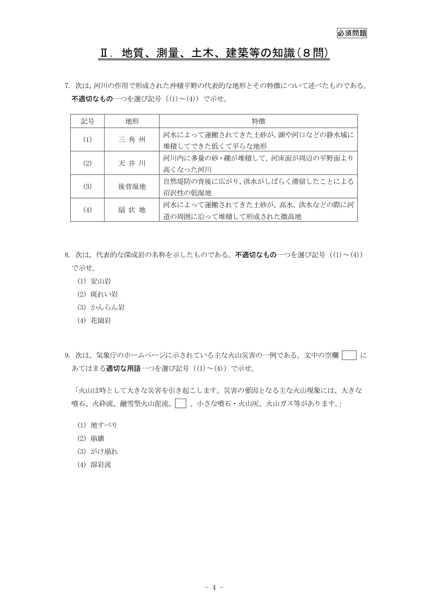
問8
必須
8. 次は，代表的な深成岩の名称を示したものである。不適切なもの一つを選び記号（(1)～(4)）
で示せ。
(1) 安山岩
(2) 斑れい岩
(3) かんらん岩
(4) 花崗岩
解答(1) 一般中原B03
図表・イラスト確認用：PDF紙面（4ページ）を表示
問9
必須
9. 次は，気象庁のホームページに示されている主な火山災害の一例である。文中の空欄 に
あてはまる適切な用語一つを選び記号（(1)～(4)）で示せ。
「火山は時として大きな災害を引き起こします。災害の要因となる主な火山現象には、大きな
噴石、火砕流、融雪型火山泥流、 、小さな噴石・火山灰、火山ガス等があります。」
(1) 地すべり
(2) 崩壊
(3) がけ崩れ
(4) 溶岩流
正解 （4）一般神﨑B06
- 5 -
必須問題
図表・イラスト確認用：PDF紙面（4ページ）を表示
問10
必須
10. 下表は，片道の水準測量の野帳記録で，Ａ地点を基準としてＢ，Ｃ，Ｄ地点の地盤標高を求め
たものである。空欄 に当てはまる数値として適切な組合せ一つを選び記号（(1)～(4)）
で示せ。
測定点
後視（ｍ）
前視（ｍ）
標高T.P.（ｍ）
Ａ地点（B.M）
Ｂ地点
Ｃ地点
Ｄ地点
2.000
… …
1.500
-
－
1.550
1.400
1.350
+20.000
+20.450
… …
+20.950
記号
Ｂ地点の
後視（ｍ)
Ｃ地点の
標高T.P.（ｍ）
(1)
(2)
(3)
(4)
1.350
1.550
1.750
0.750
+21.800
+21.100
+20.800
+20.300
解答：(3) 一般安藤B11
図表・イラスト確認用：PDF紙面（5ページ）を表示
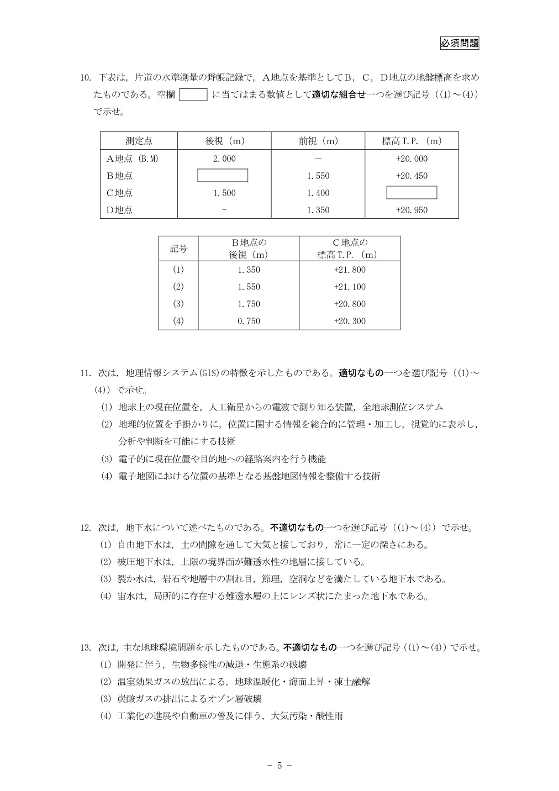
問11
必須
11. 次は，地理情報システム(GIS)の特徴を示したものである。適切なもの一つを選び記号（(1)～
(4)）で示せ。
(1) 地球上の現在位置を，人工衛星からの電波で測り知る装置，全地球測位システム
(2) 地理的位置を手掛かりに，位置に関する情報を総合的に管理・加工し，視覚的に表示し，
分析や判断を可能にする技術
(3) 電子的に現在位置や目的地への経路案内を行う機能
(4) 電子地図における位置の基準となる基盤地図情報を整備する技術
正解 (2)一般若杉B12
図表・イラスト確認用：PDF紙面（5ページ）を表示
問12
必須
12. 次は，地下水について述べたものである。不適切なもの一つを選び記号（(1)～(4)）で示せ。
(1) 自由地下水は，土の間隙を通して大気と接しており，常に一定の深さにある。
(2) 被圧地下水は，上限の境界面が難透水性の地層に接している。
(3) 裂か水は，岩石や地層中の割れ目，節理，空洞などを満たしている地下水である。
(4) 宙水は，局所的に存在する難透水層の上にレンズ状にたまった地下水である。
解答：(1) 一般安藤B25
図表・イラスト確認用：PDF紙面（5ページ）を表示
問13
必須
13. 次は，主な地球環境問題を示したものである。不適切なもの一つを選び記号（(1)～(4)）で示せ。
(1) 開発に伴う，生物多様性の減退・生態系の破壊
(2) 温室効果ガスの放出による，地球温暖化・海面上昇・凍土融解
(3) 炭酸ガスの排出によるオゾン層破壊
(4) 工業化の進展や自動車の普及に伴う，大気汚染・酸性雨
解答：(3) 一般安藤B27
- 6 -
必須問題
図表・イラスト確認用：PDF紙面（5ページ）を表示
問14
必須
14. 次は，液状化が発生しやすい地区を予測するための地形を示したものである。不適切なもの一
つを選び記号（(1)～(4)）で示せ。
(1) 旧河道
(2) 三角州
(3) 自然堤防
(4) 段丘
正解 (4) 一般遠藤B33
- 7 -
必須問題
Ⅲ．現場技術の知識(３２問)
図表・イラスト確認用：PDF紙面（6ページ）を表示
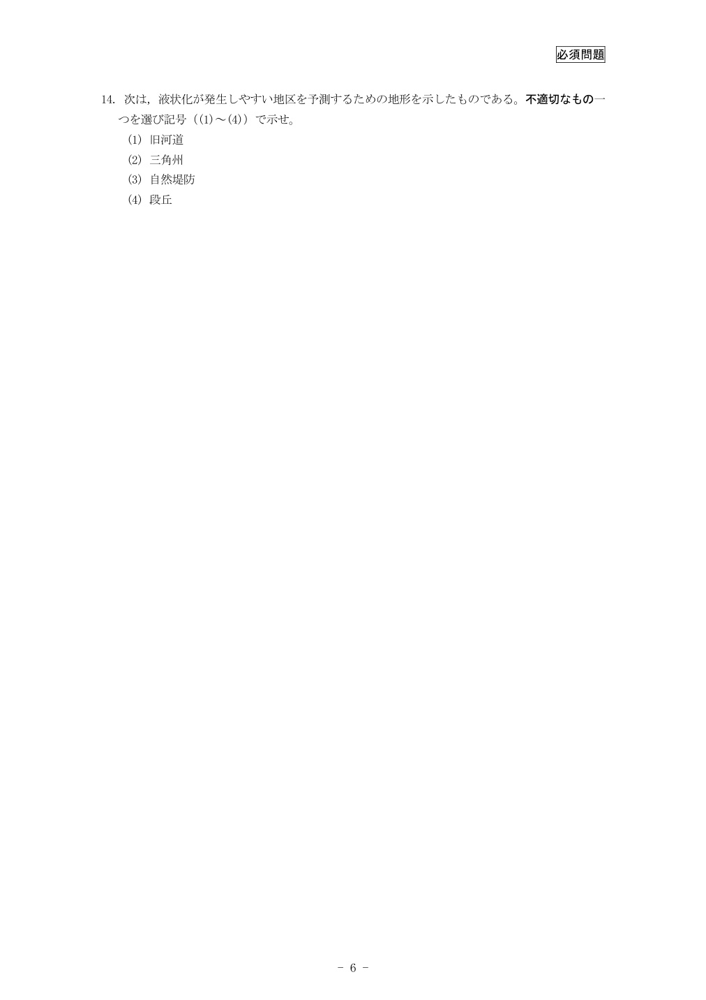
問15
必須
15. 次は，下図に示したボーリングマシンの巻上装置について述べたものである。空欄 Ａ ～
Ｄ に当てはまる名称の適切な組合せ一つを選び記号（(1)～(4)）で示せ。
ホイスチングブレーキバンドでホイスチングブレーキホイルを制動させると，回転してい
る Ａ に固定された Ｂ により Ｃ が定位置のまま回転し，外側の Ｄ に回転を加
え，ドラムに回転動力が与えられる。
記号
Ａ
Ｂ
Ｃ
Ｄ
(1)
(2)
(3)
(4)
太陽ギヤ
ドラム軸
太陽ギヤ
ドラム軸
遊星ギヤ
インターナルギヤ
遊星ギヤ
太陽ギヤ
ドラム軸
遊星ギヤ
インターナルギヤ
遊星ギヤ
インターナルギヤ
太陽ギヤ
ドラム軸
インターナルギヤ
正解 （4）ボーリング土屋共通C01-1
- 8 -
必須問題
図表・イラスト確認用：PDF紙面（7ページ）を表示
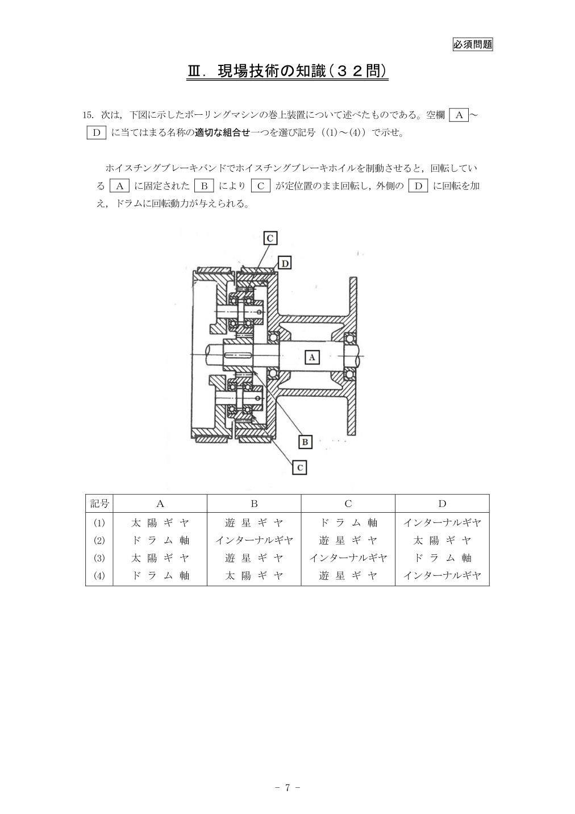
問16
必須
16. 次は，下図に示したピストンポンプについて述べたものである。空欄 Ａ ～ Ｄ に当ては
まる名称の適切な組合せ一つを選び記号（（1)～(4））で示せ。
原動機によって発生された回転運動は， Ａ により往復運動に変換されて Ｂ を介して Ｃ を
動かし Ｄ 内の容積を変化させ，バルブにより一定方向の流れをつくり吸入・吐出を行う。
記号
Ａ
Ｂ
Ｃ
Ｄ
（1）
（2）
（3）
（4）
ピストン
クランク
ピストンロッド
クランク
クランク
ピストンロッド
クランク
ピストン
シリンダ
ピストン
シリンダ
ピストンロッド
ピストンロッド
シリンダ
ピストン
シリンダ
正解 (2) ボーリング土屋共通C01-2
図表・イラスト確認用：PDF紙面（8ページ）を表示
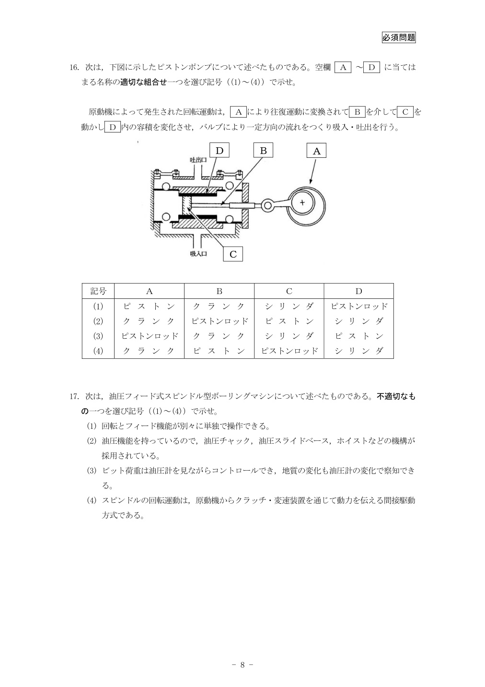
問17
必須
17. 次は，油圧フィード式スピンドル型ボーリングマシンについて述べたものである。不適切なも
の一つを選び記号（(1)～(4)）で示せ。
(1) 回転とフィード機能が別々に単独で操作できる。
(2) 油圧機能を持っているので，油圧チャック，油圧スライドベース，ホイストなどの機構が
採用されている。
(3) ビット荷重は油圧計を見ながらコントロールでき，地質の変化も油圧計の変化で察知でき
る。
(4) スピンドルの回転運動は，原動機からクラッチ・変速装置を通じて動力を伝える間接駆動
方式である。
正解 (2) ボーリング土屋共通C02-1
Ｄ
Ａ
Ｂ
Ｃ
- 9 -
必須問題
図表・イラスト確認用：PDF紙面（8ページ）を表示
問18
必須
18. 次は，ボーリングポンプを取り扱う際の注意事項について述べたものである。不適切なもの一
つを選び記号（(1)～(4)）で示せ。
(1) クランクケースなどの回転部には, 泥水などが入らないよう十分注意する。
(2) 冬季は, ポンプ及びホース内の泥水が凍結しポンプの破損の原因となるので，作業終了時
に水抜きを行うなど，凍結防止対策をとる。
(3) 木屑等の異物を吸込むとバルブの動作不良の原因となるため，吸入口には金網等で異物吸
込み防止策を施す。
(4) 泥水の吸込み高さが高いほど効率が良くなるので，ポンプ本体と吸入口の高低差はなるべ
く大きくする。
正解 （4）ボーリング土屋共通C02-2
図表・イラスト確認用：PDF紙面（9ページ）を表示
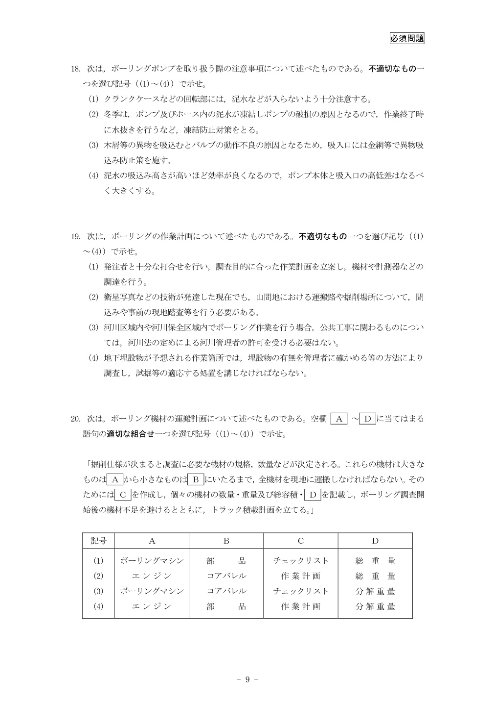
問19
必須
19. 次は，ボーリングの作業計画について述べたものである。不適切なもの一つを選び記号（(1)
～(4)）で示せ。
(1) 発注者と十分な打合せを行い，調査目的に合った作業計画を立案し，機材や計測器などの
調達を行う。
(2) 衛星写真などの技術が発達した現在でも，山間地における運搬路や掘削場所について，聞
込みや事前の現地踏査等を行う必要がある。
(3) 河川区域内や河川保全区域内でボーリング作業を行う場合，公共工事に関わるものについ
ては，河川法の定めによる河川管理者の許可を受ける必要はない。
(4) 地下埋設物が予想される作業箇所では，埋設物の有無を管理者に確かめる等の方法により
調査し，試掘等の適応する処置を講じなければならない。
正解：（3）ボーリング土屋共通C03
図表・イラスト確認用：PDF紙面（9ページ）を表示
問20
必須
20. 次は，ボーリング機材の運搬計画について述べたものである。空欄 Ａ ～ Ｄ に当てはまる
語句の適切な組合せ一つを選び記号（(1)～(4)）で示せ。
「掘削仕様が決まると調査に必要な機材の規格，数量などが決定される。これらの機材は大きな
ものは Ａ から小さなものは Ｂ にいたるまで，全機材を現地に運搬しなければならない。その
ためには Ｃ を作成し，個々の機材の数量・重量及び総容積・ Ｄ を記載し，ボーリング調査開
始後の機材不足を避けるとともに，トラック積載計画を立てる。」
記号
Ａ
Ｂ
Ｃ
Ｄ
(1)
(2)
(3)
(4)
ボーリングマシン
エンジン
ボーリングマシン
エンジン
部
品
コアバレル
コアバレル
部
品
チェックリスト
作業計画
チェックリスト
作業計画
総
重
量
総
重
量
分解重量
分解重量
正解：（1）ボーリング土屋共通C04-1
- 10 -
必須問題
図表・イラスト確認用：PDF紙面（9ページ）を表示
問21
必須
21. 次は，ボーリング機材の運搬方法とその特徴について述べたものである。不適切なもの一つを選び
記号（(1)～(4)）で示せ。
記号
運搬方法
特徴
(1)
索道運搬
山岳地での急傾斜地及び谷越えの運搬など,運搬条件の悪い所
では有利な方法である。
(2)
一輪車運搬
道路幅が狭い平坦地での近距離運搬に適しているが，最大積載
運搬能力は10kN～15kN である。
(3)
モノレール運搬
レール仮設にやや手間取るが，樹木を傷めたり，地表を踏み荒
らすことは少ない。
(4)
トラック運搬
長距離の運搬に適しており，道路幅の制約は受けるが，路面の
整備状況の制約はない。
解答：（4) ボーリング土屋共通C04-2
図表・イラスト確認用：PDF紙面（10ページ）を表示
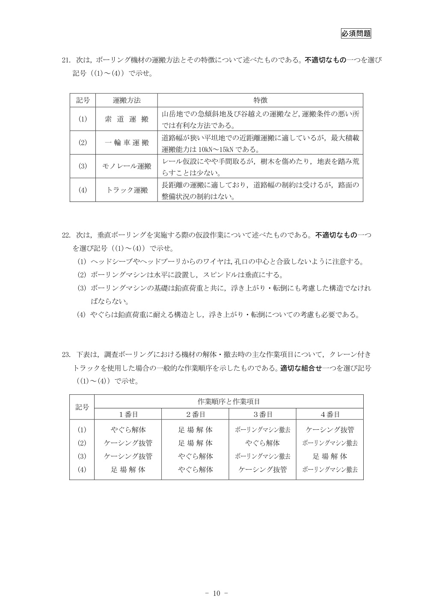
問22
必須
22. 次は，垂直ボーリングを実施する際の仮設作業について述べたものである。不適切なもの一つ
を選び記号（(1)～(4)）で示せ。
(1) ヘッドシーブやヘッドプーリからのワイヤは,孔口の中心と合致しないように注意する。
(2) ボーリングマシンは水平に設置し，スピンドルは垂直にする。
(3) ボーリングマシンの基礎は鉛直荷重と共に，浮き上がり・転倒にも考慮した構造でなけれ
ばならない。
(4) やぐらは鉛直荷重に耐える構造とし，浮き上がり・転倒についての考慮も必要である。
解答：（1) ボーリング土屋共通C05-1
図表・イラスト確認用：PDF紙面（10ページ）を表示
問23
必須
23. 下表は，調査ボーリングにおける機材の解体・撤去時の主な作業項目について，クレーン付き
トラックを使用した場合の一般的な作業順序を示したものである。適切な組合せ一つを選び記号
（(1)～(4)）で示せ。
記号
作業順序と作業項目
１番目
２番目
３番目
４番目
(1)
(2)
(3)
(4)
やぐら解体
ケーシング抜管
ケーシング抜管
足場解体
足場解体
足場解体
やぐら解体
やぐら解体
ボーリングマシン撤去
やぐら解体
ボーリングマシン撤去
ケーシング抜管
ケーシング抜管
ボーリングマシン撤去
足場解体
ボーリングマシン撤去
解答 （3）ボーリング土屋共通C05-2
- 11 -
必須問題
図表・イラスト確認用：PDF紙面（10ページ）を表示
問24
必須
24. 次は，ボーリングで泥水を使用する主な目的について述べたものである。不適切なもの一つを
選び記号（(1)～(4））で示せ。
(1) 孔曲がりを防止する。
(2) 泥水比重により地層中の水，ガスなどのボーリング孔への湧出を防止する。
(3) 泥壁をつくり地層の崩壊を防止する。
(4) 循環停止に際し，カッティングスの沈降による掘削ツールスの抑留を防止する。
正解 (1) ボーリング伊藤共通C06-1
図表・イラスト確認用：PDF紙面（11ページ）を表示
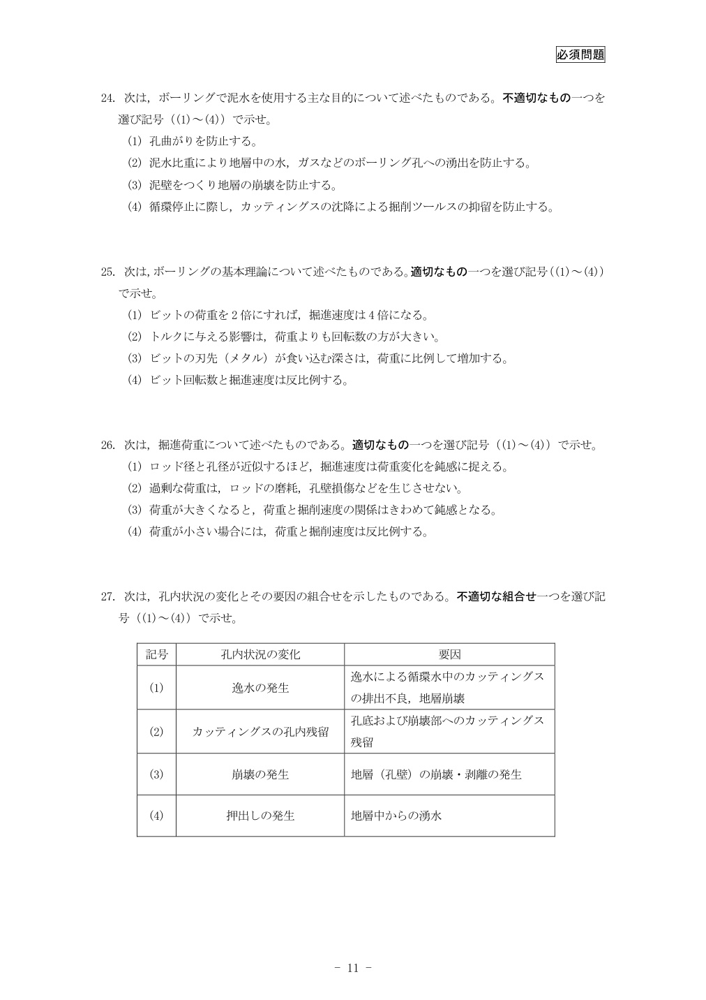
問25
必須
25. 次は，ボーリングの基本理論について述べたものである。適切なもの一つを選び記号（(1)～(4)）
で示せ。
(1) ビットの荷重を2 倍にすれば，掘進速度は4 倍になる。
(2) トルクに与える影響は，荷重よりも回転数の方が大きい。
(3) ビットの刃先（メタル）が食い込む深さは，荷重に比例して増加する。
(4) ビット回転数と掘進速度は反比例する。
解答(3) ボーリング五十嵐共通C06-3
図表・イラスト確認用：PDF紙面（11ページ）を表示
問26
必須
26. 次は，掘進荷重について述べたものである。適切なもの一つを選び記号（(1)～(4)）で示せ。
(1) ロッド径と孔径が近似するほど，掘進速度は荷重変化を鈍感に捉える。
(2) 過剰な荷重は，ロッドの磨耗，孔壁損傷などを生じさせない。
(3) 荷重が大きくなると，荷重と掘削速度の関係はきわめて鈍感となる。
(4) 荷重が小さい場合には，荷重と掘削速度は反比例する。
正解（3）ボーリング湯川共通C06-4
図表・イラスト確認用：PDF紙面（11ページ）を表示
問27
必須
27. 次は，孔内状況の変化とその要因の組合せを示したものである。不適切な組合せ一つを選び記
号（(1)～(4)）で示せ。
記号
孔内状況の変化
要因
(1)
逸水の発生
逸水による循環水中のカッティングス
の排出不良，地層崩壊
(2)
カッティングスの孔内残留
孔底および崩壊部へのカッティングス
残留
(3)
崩壊の発生
地層（孔壁）の崩壊・剥離の発生
(4)
押出しの発生
地層中からの湧水
正解 (4) ボーリング伊藤共通C07-1
- 12 -
必須問題
図表・イラスト確認用：PDF紙面（11ページ）を表示
問28
必須
28. 次は，コア詰りの原因や現象について述べたものである。不適切なもの一つを選び記号（(1)
～（4））で示せ。
(1) 過大な給圧をかけたのでコアが無理にコアバレル内に入った。
(2) 送水圧が急激に下がった。
(3) 掘進速度が急激に低下した。
(4) 破砕帯の掘削時に送水圧が急激に上がった。
正解(2) ボーリング伊藤共通C08-1
図表・イラスト確認用：PDF紙面（12ページ）を表示
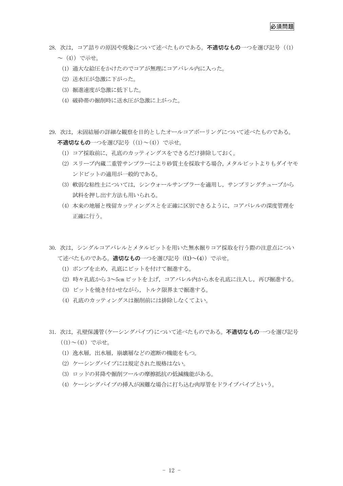
問29
必須
29. 次は，未固結層の詳細な観察を目的としたオールコアボーリングについて述べたものである。
不適切なもの一つを選び記号（(1)～(4)）で示せ。
(1) コア採取前に，孔底のカッティングスをできるだけ排除しておく。
(2) スリーブ内蔵二重管サンプラーにより砂質土を採取する場合，メタルビットよりもダイヤモ
ンドビットの適用が一般的である。
(3) 軟弱な粘性土については，シンウォールサンプラーを適用し，サンプリングチューブから
試料を押し出す方法も用いられる。
(4) 本来の地層と残留カッティングスとを正確に区別できるように，コアバレルの深度管理を
正確に行う。
解答(2) ボーリング五十嵐共通C08-2
図表・イラスト確認用：PDF紙面（12ページ）を表示
問30
必須
30. 次は，シングルコアバレルとメタルビットを用いた無水掘りコア採取を行う際の注意点につい
て述べたものである。適切なもの一つを選び記号（(1)～(4））で示せ。
(1) ポンプを止め，孔底にビットを付けて掘進する。
(2) 時々孔底から3～5cm ビットを上げ，コアバレル内から水を孔底に注入し，再び掘進する。
(3) ビットを焼き付かせながら，トルク限界まで掘進する。
(4) 孔底のカッティングスは掘削前には排除しなくてよい。
正解 (1) ボーリング伊藤共通C08-4
図表・イラスト確認用：PDF紙面（12ページ）を表示
問31
必須
31. 次は，孔壁保護管(ケーシングパイプ)について述べたものである。不適切なもの一つを選び記号
（(1)～(4)）で示せ。
(1) 逸水層，出水層，崩壊層などの遮断の機能をもつ。
(2) ケーシングパイプには規定された規格はない。
(3) ロッドの昇降や掘削ツールの摩擦抵抗の低減機能がある。
(4) ケーシングパイプの挿入が困難な場合に打ち込む肉厚管をドライブパイプという。
解答 (2) ボーリング沼宮内共通C09-1
- 13 -
必須問題
図表・イラスト確認用：PDF紙面（12ページ）を表示
問32
必須
32. 次は，ボーリング孔の埋戻しが不完全であったため発生した事故事例について述べたものであ
る。不適切なもの一つを選び記号（(1)～(4)）で示せ。
(1) 残っていたボーリング孔から地下水が湧出し掘削工事に支障をきたした。
(2) トンネル天端の崩壊を招いた。
(3) 構造物の不等沈下が発生した。
(4) 浅いボーリングであったが応力開放が発生し，有感地震が発生した。
解答 (4) ボーリング沼宮内共通C10-1
図表・イラスト確認用：PDF紙面（13ページ）を表示
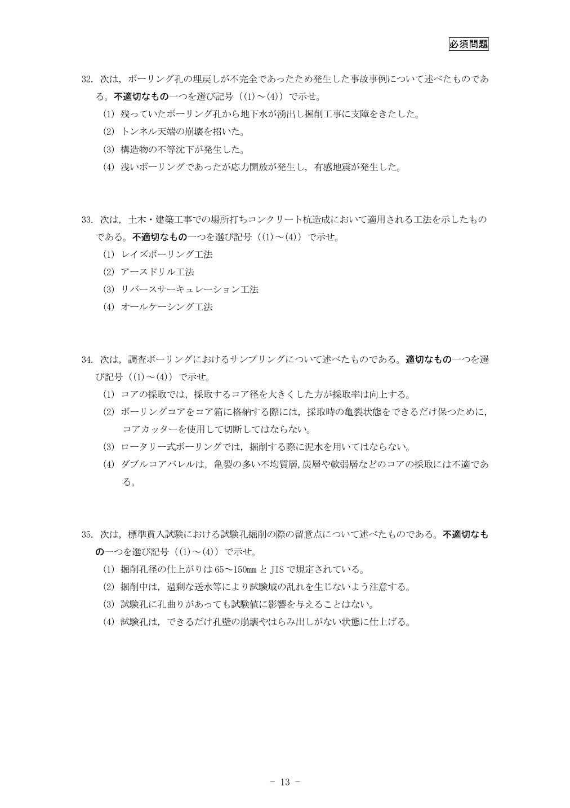
問33
必須
33. 次は，土木・建築工事での場所打ちコンクリート杭造成において適用される工法を示したもの
である。不適切なもの一つを選び記号（(1)～(4)）で示せ。
(1) レイズボーリング工法
(2) アースドリル工法
(3) リバースサーキュレーション工法
(4) オールケーシング工法
解答(1) ボーリング五十嵐共通C11-2
図表・イラスト確認用：PDF紙面（13ページ）を表示
問34
必須
34. 次は，調査ボーリングにおけるサンプリングについて述べたものである。適切なもの一つを選
び記号（(1)～(4)）で示せ。
(1) コアの採取では，採取するコア径を大きくした方が採取率は向上する。
(2) ボーリングコアをコア箱に格納する際には，採取時の亀裂状態をできるだけ保つために，
コアカッターを使用して切断してはならない。
(3) ロータリー式ボーリングでは，掘削する際に泥水を用いてはならない。
(4) ダブルコアバレルは，亀裂の多い不均質層,炭層や軟弱層などのコアの採取には不適であ
る。
解答(1) 岩盤西柳共通C21-1
図表・イラスト確認用：PDF紙面（13ページ）を表示
問35
必須
35. 次は，標準貫入試験における試験孔掘削の際の留意点について述べたものである。不適切なも
の一つを選び記号（(1)～(4)）で示せ。
(1) 掘削孔径の仕上がりは65～150mm とJIS で規定されている。
(2) 掘削中は，過剰な送水等により試験域の乱れを生じないよう注意する。
(3) 試験孔に孔曲りがあっても試験値に影響を与えることはない。
(4) 試験孔は，できるだけ孔壁の崩壊やはらみ出しがない状態に仕上げる。
解答(3) 岩盤西柳共通C22
- 14 -
必須問題
図表・イラスト確認用：PDF紙面（13ページ）を表示
問36
必須
36. 次は，標準貫入試験（JIS A 1219:2013）を実施する際の留意事項について述べたものである。
不適切なもの一つを選び記号（(1)～(4)）で示せ。
(1) 予備打ちの目的は，試験孔の掘削で生じた乱れを避けることにある。
(2) Ｎ値50 以上と想定される地盤においても，予備打ちを行わなければならない。
(3) 自沈による貫入量が450mm に達した場合は，本打ちは行わない。
(4) 採取された試料は，SPT サンプラーの逆止弁の位置に到達してはいけない。
正解(2) 土質千葉共通C22-1
図表・イラスト確認用：PDF紙面（14ページ）を表示
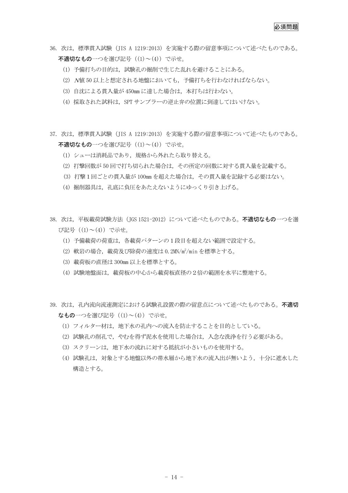
問37
必須
37. 次は，標準貫入試験（JIS A 1219:2013）を実施する際の留意事項について述べたものである。
不適切なもの一つを選び記号（(1)～(4)）で示せ。
(1) シューは消耗品であり，規格から外れたら取り替える。
(2) 打撃回数が50 回で打ち切られた場合は，その所定の回数に対する貫入量を記載する。
(3) 打撃１回ごとの貫入量が100mm を超えた場合は，その貫入量を記録する必要はない。
(4) 掘削器具は，孔底に負圧をあたえないようにゆっくり引き上げる。
正解(3) 土質千葉共通C22-2
図表・イラスト確認用：PDF紙面（14ページ）を表示
問38
必須
38. 次は，平板載荷試験方法（JGS 1521-2012）について述べたものである。不適切なもの一つを選
び記号（(1)～(4)）で示せ。
(1) 予備載荷の荷重は，各載荷パターンの１段目を超えない範囲で設定する。
(2) 軟岩の場合，載荷及び除荷の速度は0.2MN/m2/min を標準とする。
(3) 載荷板の直径は300mm 以上を標準とする。
(4) 試験地盤面は，載荷板の中心から載荷板直径の２倍の範囲を水平に整地する。
正解(4) 土質千葉共通C26
図表・イラスト確認用：PDF紙面（14ページ）を表示
問39
必須
39. 次は，孔内流向流速測定における試験孔設置の際の留意点について述べたものである。不適切
なもの一つを選び記号（(1)～(4)）で示せ。
(1) フィルター材は，地下水の孔内への流入を防止することを目的としている。
(2) 試験孔の削孔で，やむを得ず泥水を使用した場合は，入念な洗浄を行う必要がある。
(3) スクリーンは，地下水の流れに対する抵抗が小さいものを使用する。
(4) 試験孔は，対象とする地盤以外の帯水層から地下水の流入出が無いよう，十分に遮水した
構造とする。
正解：(1) 岩盤西柳共通C29
- 15 -
必須問題
図表・イラスト確認用：PDF紙面（14ページ）を表示
問40
必須
40. 下表は，ボーリング孔を利用する物理検層において，ケーシング(鋼製)がある場合の適用条件
を示したものである。不適切なもの一つを選び記号（(1)～(4)）で示せ。
記号
検層種目
適用条件
ケーシング(鋼製)あり
(1)
(2)
(3)
(4)
速度検層（PS 検層）
電気検層（比抵抗検層）
密度検層
孔径検層
△
〇
〇
×
※〇：測定可能 △：条件により測定可能 ×：測定不可
正解(2) 土質渡辺共通C29-1
図表・イラスト確認用：PDF紙面（15ページ）を表示
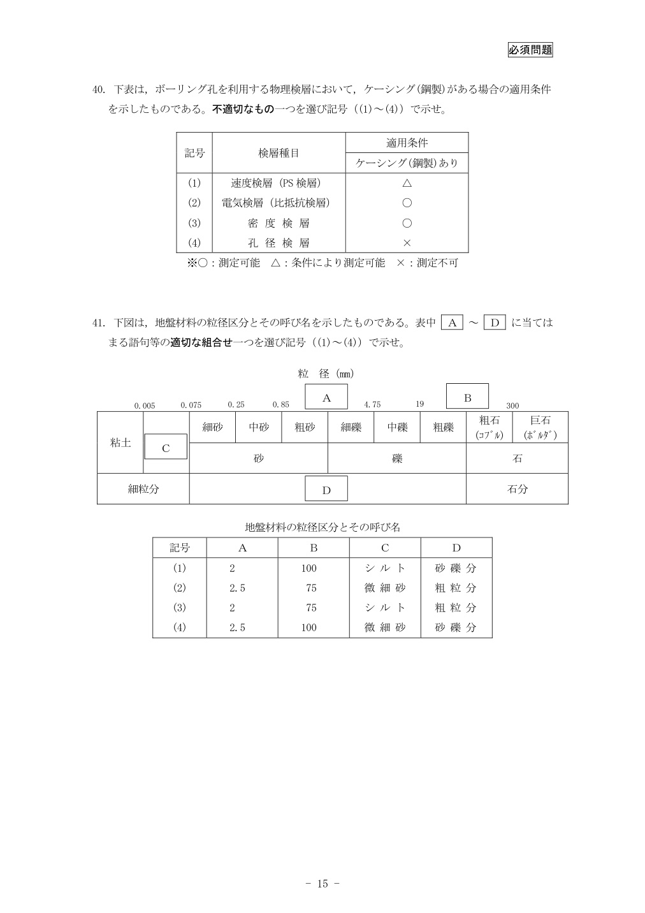
問41
必須
41. 下図は，地盤材料の粒径区分とその呼び名を示したものである。表中 Ａ ～ Ｄ に当ては
まる語句等の適切な組合せ一つを選び記号（(1)～(4)）で示せ。
粘土
シルト
細砂
中砂
粗砂
細礫
中礫
粗礫
粗石
(ｺﾌﾞﾙ)
巨石
(ﾎﾞﾙﾀﾞ)
砂
礫
石
細粒分
粗粒分
石分
地盤材料の粒径区分とその呼び名
記号
Ａ
Ｂ
Ｃ
Ｄ
(1)
(2)
(3)
(4)
2
2.5
2
2.5
100
75
75
100
シルト
微細砂
シルト
微細砂
砂礫分
粗粒分
粗粒分
砂礫分
正解 (3) 土質渡辺共通C31-2
0.005
0.075
0.25
0.85
2
4.75
19
75
300
粒 径（mm）
Ａ
Ｄ
Ｂ
Ｃ
- 16 -
必須問題
図表・イラスト確認用：PDF紙面（15ページ）を表示
問42
必須
42. 下表は，代表的な土の含水比の測定例を示したものである。表中 Ａ ～ Ｄ に当てはまる
語句等の適切な組合せ一つを選び記号（（1)～(4））で示せ。
土の種類
沖積粘土
洪積粘土
Ａ
関東ローム
Ｂ
まさ土
しらす
含水比(％)
50～80
Ｃ
10～30
80～150
110～1300
Ｄ
15～30
記号
Ａ
Ｂ
Ｃ
Ｄ
(1)
(2)
(3)
(4)
砂質土
泥 炭
泥 炭
砂質土
泥 炭
砂質土
砂質土
泥 炭
30～60
5～10
30～60
5～10
6～ 30
100～150
6～ 30
100～150
正解(1) 土質高田共通C31-3
図表・イラスト確認用：PDF紙面（16ページ）を表示
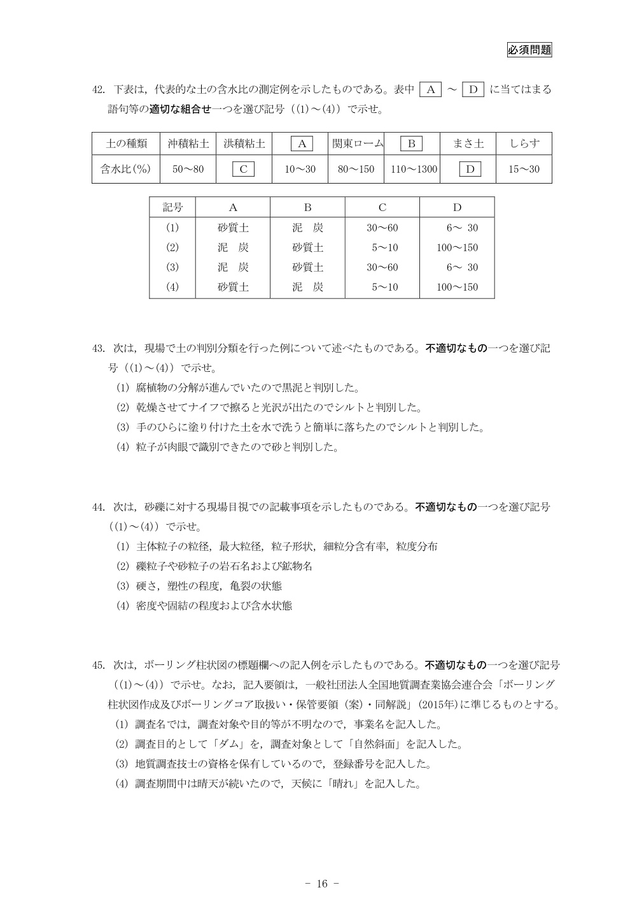
問43
必須
43. 次は，現場で土の判別分類を行った例について述べたものである。不適切なもの一つを選び記
号（(1)～(4)）で示せ。
(1) 腐植物の分解が進んでいたので黒泥と判別した。
(2) 乾燥させてナイフで擦ると光沢が出たのでシルトと判別した。
(3) 手のひらに塗り付けた土を水で洗うと簡単に落ちたのでシルトと判別した。
(4) 粒子が肉眼で識別できたので砂と判別した。
正解 (2) 土質高田共通C31-5
図表・イラスト確認用：PDF紙面（16ページ）を表示
問44
必須
44. 次は，砂礫に対する現場目視での記載事項を示したものである。不適切なもの一つを選び記号
（(1)～(4)）で示せ。
(1) 主体粒子の粒径，最大粒径，粒子形状，細粒分含有率，粒度分布
(2) 礫粒子や砂粒子の岩石名および鉱物名
(3) 硬さ，塑性の程度，亀裂の状態
(4) 密度や固結の程度および含水状態
正解 (3) 土質渡辺共通C33-2
図表・イラスト確認用：PDF紙面（16ページ）を表示
問45
必須
45. 次は，ボーリング柱状図の標題欄への記入例を示したものである。不適切なもの一つを選び記号
（（1)～(4））で示せ。なお，記入要領は，一般社団法人全国地質調査業協会連合会「ボーリング
柱状図作成及びボーリングコア取扱い・保管要領（案）・同解説」(2015年)に準じるものとする。
(1) 調査名では，調査対象や目的等が不明なので，事業名を記入した。
(2) 調査目的として「ダム」を，調査対象として「自然斜面」を記入した。
(3) 地質調査技士の資格を保有しているので，登録番号を記入した。
(4) 調査期間中は晴天が続いたので，天候に「晴れ」を記入した。
正解 (4) 土質高田共通C33-4
- 17 -
必須問題
図表・イラスト確認用：PDF紙面（16ページ）を表示
問46
必須
46. 下図は，土の粒度分布を示したものである。図中 Ａ ～ Ｄ に当てはまる語句の適切な組
合せ一つを選び記号（(1)～(4)）で示せ。
記号
Ａ
Ｂ
Ｃ
Ｄ
(1)
(2)
(3)
(4)
良い
悪い
良い
悪い
悪い
良い
悪い
良い
均一
不均一
不均一
均一
不均一
均一
均一
不均一
正解 (4) 土質渡辺共通C33-6
小 ← 粒径 → 大
小 ← 粒径 → 大
粒度分布が 悪い
粒度分布が 良い
粒径が 均一
粒径が 不均一
ある限られた範囲の粒径が多い。
(淘汰されている)
大きいものから小さいものまで含まれている。
(淘汰されていない)
粒径加積曲線
粒径加積曲線
質
量
百
分
率
質
量
百
分
率
Ａ
Ｂ
Ｃ
Ｄ
- 18 -
必須問題
Ⅳ．調査技術の理解度(４問)
図表・イラスト確認用：PDF紙面（17ページ）を表示
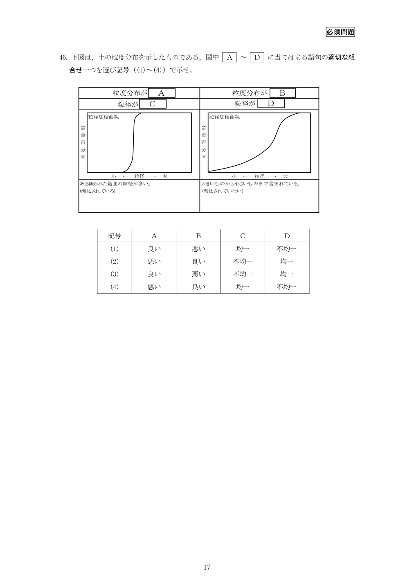
問47
必須
47. 次は，クリノメーターで地層の走向・傾斜を測定した例である。地層の走向・傾斜として適切
なもの一つを選び記号((1)～(4))で示せ。
(1) N30°W 60°SE
(2) N30°E 60°NE
(3) N30°W 60°NE
(4) N30°E 60°SW
解答：(3) 土質川井共通D01
傾 斜
60°
走 向
層理面
30°
北
北
- 19 -
必須問題
図表・イラスト確認用：PDF紙面（18ページ）を表示
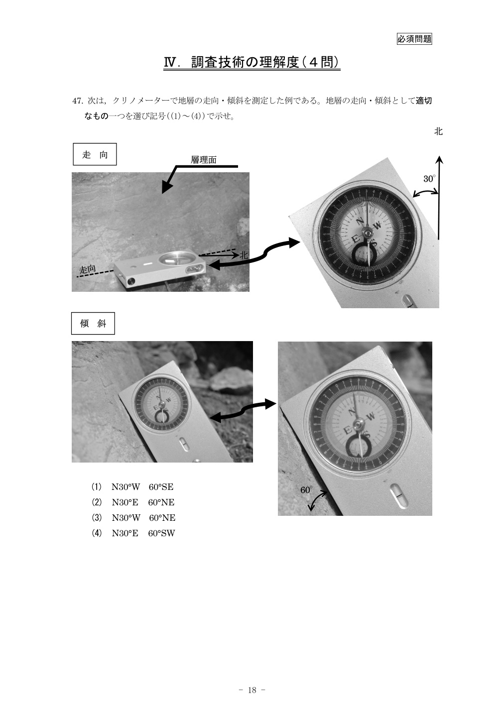
問48
必須
48. 次は，物理探査手法と適用例の組合せを示したものである。不適切な組合せ一つを選び記号((1)
～(4))で示せ。
記号
物理探査手法
適用例
(1)
(2)
(3)
(4)
電気探査
弾性波探査(屈折法)
磁気探査
音波探査
地下水調査
トンネル地山調査
空洞調査
水深測定
正解(3) 土質川井共通D02
図表・イラスト確認用：PDF紙面（19ページ）を表示
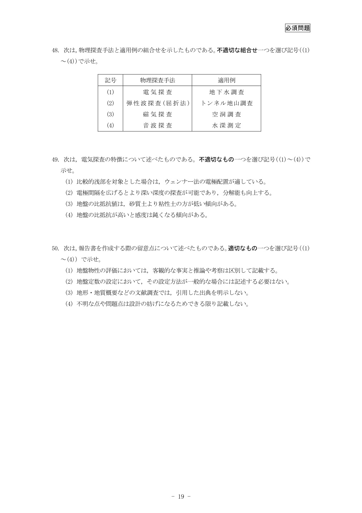
問49
必須
49. 次は，電気探査の特徴について述べたものである。不適切なもの一つを選び記号((1)～(4))で
示せ。
(1) 比較的浅部を対象とした場合は，ウェンナー法の電極配置が適している。
(2) 電極間隔を広げるとより深い深度の探査が可能であり，分解能も向上する。
(3) 地盤の比抵抗値は，砂質土より粘性土の方が低い傾向がある。
(4) 地盤の比抵抗が高いと感度は鈍くなる傾向がある。
正解(2) 土質川井共通D03
図表・イラスト確認用：PDF紙面（19ページ）を表示
問50
必須
50. 次は，報告書を作成する際の留意点について述べたものである。適切なもの一つを選び記号（(1)
～(4)）で示せ。
(1) 地盤物性の評価においては，客観的な事実と推論や考察は区別して記載する。
(2) 地盤定数の設定において，その設定方法が一般的な場合には記述する必要はない。
(3) 地形・地質概要などの文献調査では，引用した出典を明示しない。
(4) 不明な点や問題点は設計の妨げになるためできる限り記載しない。
正解(1) 土質川井共通D07
- 20 -
必須問題
Ⅴ．管理技法(８問)
図表・イラスト確認用：PDF紙面（19ページ）を表示
問51
必須
51. 次は，労働安全衛生規則で定められている特別教育が必要な作業を示したものである。適切な
もの一つを選び記号（(1)～(4)）で示せ。
(1) ガス溶接
(2) 10kN以上の移動式クレーン運転
(3) 高さ2ｍ以上の足場の組立，解体等の作業
(4) 10kN以上の不整地運搬車の運転
解答(3) ボーリング伊藤共通F01-1
図表・イラスト確認用：PDF紙面（20ページ）を表示
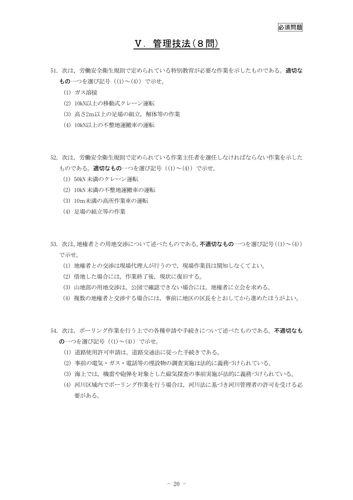
問52
必須
52. 次は，労働安全衛生規則で定められている作業主任者を選任しなければならない作業を示した
ものである。適切なもの一つを選び記号（(1)～(4)）で示せ。
(1) 50kN 未満のクレーン運転
(2) 10kN 未満の不整地運搬車の運転
(3) 10ｍ未満の高所作業車の運転
(4) 足場の組立等の作業
解答：(4) ボーリング伊藤共通F01-2
図表・イラスト確認用：PDF紙面（20ページ）を表示
問53
必須
53. 次は，地権者との用地交渉について述べたものである。不適切なもの一つを選び記号（(1)～(4)）
で示せ。
(1) 地権者との交渉は現場代理人が行うので，現場作業員は関知しなくてよい。
(2) 借地した場合には，作業終了後，現状に復旧する。
(3) 山地部の用地交渉は，公図で確認できない場合には，地権者に立会を求める。
(4) 複数の地権者と交渉する場合には，事前に地区の区長をとおしてから進めたほうがよい。
解答：(1) ボーリング伊藤共通F02-1
図表・イラスト確認用：PDF紙面（20ページ）を表示
問54
必須
54. 次は，ボーリング作業を行う上での各種申請や手続きについて述べたものである。不適切なも
の一つを選び記号（(1)～(4)）で示せ。
(1) 道路使用許可申請は，道路交通法に従った手続きである。
(2) 事前の電気・ガス・電話等の埋設物の調査実施は法的に義務づけられている。
(3) 海上では，機雷や砲弾を対象とした磁気探査の事前実施が法的に義務づけられている。
(4) 河川区域内でボーリング作業を行う場合は，河川法に基づき河川管理者の許可を受ける必
要がある。
解答 (2) ボーリング沼宮内共通F02-2
- 21 -
必須問題
図表・イラスト確認用：PDF紙面（20ページ）を表示
問55
必須
55. 次は，足場仮設の安全管理について述べたものである。不適切なもの一つを選び記号（(1)～(4)）
で示せ。
(1) 事業者は作業開始前に足場の点検をする義務はない。
(2) 高さ5ｍ以上の足場の組立及び解体には，作業主任者の選任が必要である。
(3) 高さ2ｍ以上の足場には，高さ85cm 以上の手すりを設ける。
(4) 高さ2ｍ以上の足場には，手すりの下に高さ30～50cm の位置に中さんを設ける。
解答（1） ボーリング伊藤共通F03-1
図表・イラスト確認用：PDF紙面（21ページ）を表示
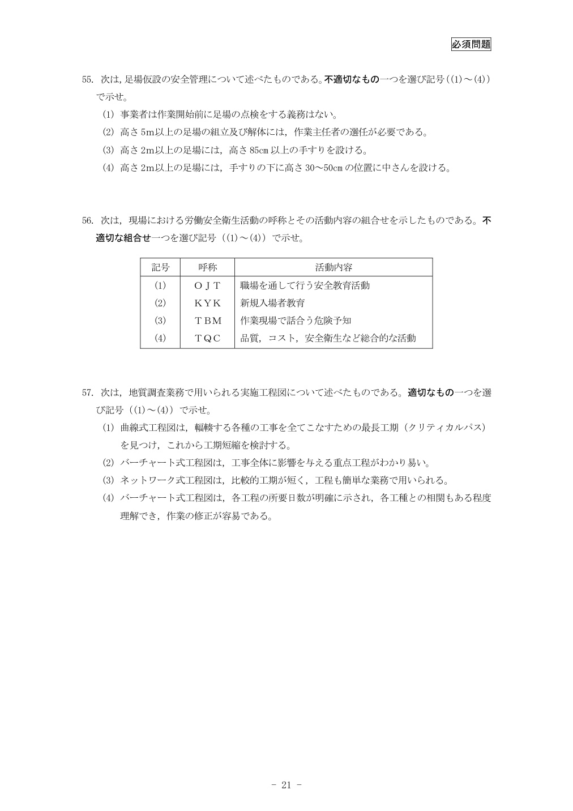
問56
必須
56. 次は，現場における労働安全衛生活動の呼称とその活動内容の組合せを示したものである。不
適切な組合せ一つを選び記号（(1)～(4)）で示せ。
記号
呼称
活動内容
(1)
(2)
(3)
(4)
ＯＪＴ
ＫＹＫ
ＴＢＭ
ＴＱＣ
職場を通して行う安全教育活動
新規入場者教育
作業現場で話合う危険予知
品質，コスト，安全衛生など総合的な活動
解答 (2) ボーリング沼宮内共通F03-2
図表・イラスト確認用：PDF紙面（21ページ）を表示
問57
必須
57. 次は，地質調査業務で用いられる実施工程図について述べたものである。適切なもの一つを選
び記号（(1)～(4)）で示せ。
(1) 曲線式工程図は，輻輳する各種の工事を全てこなすための最長工期（クリティカルパス）
を見つけ，これから工期短縮を検討する。
(2) バーチャート式工程図は，工事全体に影響を与える重点工程がわかり易い。
(3) ネットワーク式工程図は，比較的工期が短く，工程も簡単な業務で用いられる。
(4) バーチャート式工程図は，各工程の所要日数が明確に示され，各工種との相関もある程度
理解でき，作業の修正が容易である。
解答（4）ボーリング伊藤共通F04
- 22 -
必須問題
図表・イラスト確認用：PDF紙面（21ページ）を表示
問58
必須
58. 下表は，全国地質調査業協会連合会が公表する高品質ボーリングの積算基準（オールコアボー
リングの積算歩掛に対する倍率(補正割合）)を示したものである。表中の空欄 Ａ ～ Ｄ に当
てはまる語句や数字の適切な組合せ一つを選び記号（(1)～(4)）で示せ。
表 補正割合の目安
地層区分(土質)
粘性土
Ａ
砂礫
玉石混じり礫
固結シルト
固結粘土
補正割合
1.7 倍
1.7 倍
2.8 倍
4.0 倍
Ｂ 倍
地層区分(岩盤)
軟岩
中硬岩
硬岩
極硬岩
Ｄ
補正割合
Ｃ 倍
2.0 倍
2.0 倍
2.0 倍
3.5 倍
記号
Ａ
Ｂ
Ｃ
Ｄ
(1)
(2)
(3)
(4)
シルト
シルト
砂質土
砂質土
2.2
1.7
1.7
2.2
2.0
1.6
2.0
1.6
破砕帯
変質帯
破砕帯
変質帯
解答 ( 3 ) ボーリング沼宮内共通F05
- 23 -
選択問題
Ⅵ．選 択 問 題
問59から問102は、選択問題である。
以下のＡ群またはＢ群のいずれか一方を任意選択の上、解答すること。
選択問題Ａ群：22 問（主に土質に関連した分野；問59～問80） ※24～29 ページ
選択問題Ｂ群：22 問（主に岩盤に関連した分野；問81～問102）※30～36 ページ
※Ａ群、Ｂ群の選択は、受験願書で選択記載した主な調査対象「土質」、「岩盤」の
いずれかに関わらず、任意で選択することができる。
※Ａ群およびＢ群の両方を解答している場合、選択問題の採点は行わない。解答
用紙への記入の際は、注意して記入すること。
- 24 -
選択問題 Ａ群
選択問題Ａ群：22問（主に土質に関連した分野；問59～問80）
現場技術の知識 １８問、調査技術の理解度 ４問
図表・イラスト確認用：PDF紙面（22ページ）を表示
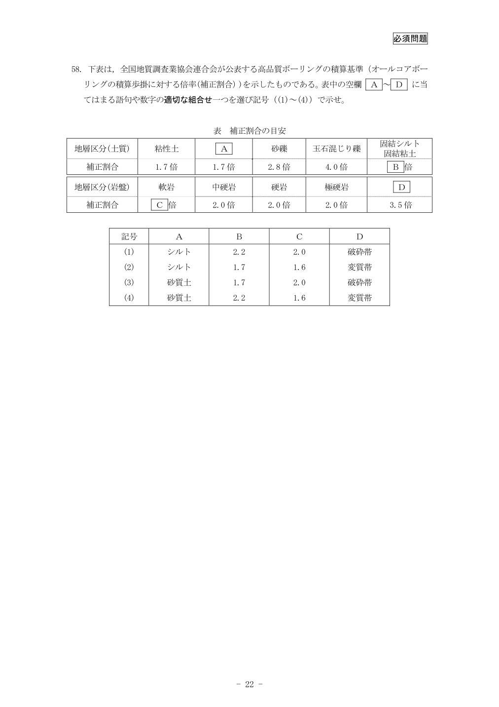
問59
A群（土質）
59. 次は，ボーリングに使用される機器について述べたものである。不適切なもの一つを選び記号
（(1)～(4)）で示せ。
(1) ロッドホルダは，孔内のボーリングロッドを孔の口元で保持する器具で，浅尺用では一般
に手動式で，枠の中に２個の扇型の駒（ジョー）を備えている。
(2) ウォータスイベルには，ポンプから送水される掘削流体をロッドに送るためのジョイント
としての機能がある。
(3) メタルクラウンは，軟岩，未固結堆積層及び硬岩を含む広範囲な地層の掘削に使用される。
(4) セジメントチューブは，カッティングス（掘屑）を採取するためのチューブで，コアチュ
ーブの上部に取付けて使用する。
解答（3） ボーリング土屋土質C02-3
図表・イラスト確認用：PDF紙面（24ページ）を表示
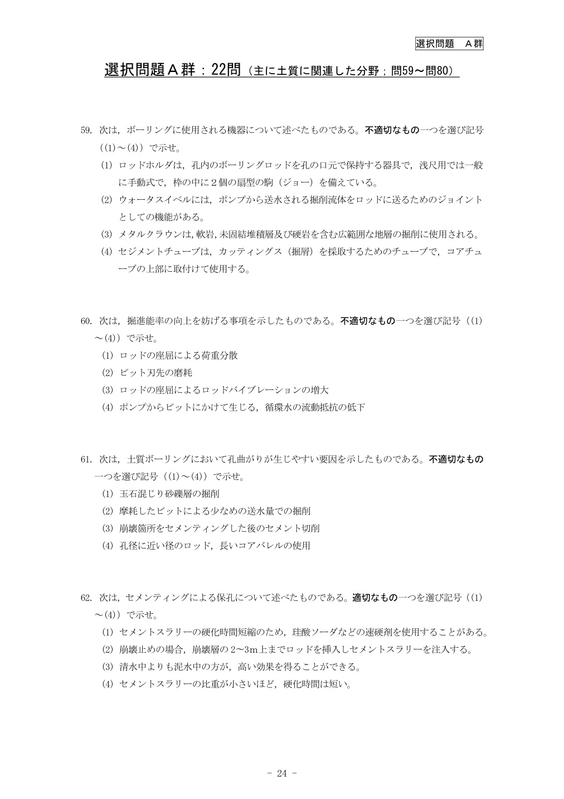
問60
A群（土質）
60. 次は，掘進能率の向上を妨げる事項を示したものである。不適切なもの一つを選び記号（(1)
～(4)）で示せ。
(1) ロッドの座屈による荷重分散
(2) ビット刃先の磨耗
(3) ロッドの座屈によるロッドバイブレーションの増大
(4) ポンプからビットにかけて生じる，循環水の流動抵抗の低下
解答(4) ボーリング五十嵐土質C06-2
図表・イラスト確認用：PDF紙面（24ページ）を表示
問61
A群（土質）
61. 次は，土質ボーリングにおいて孔曲がりが生じやすい要因を示したものである。不適切なもの
一つを選び記号（(1)～(4)）で示せ。
(1) 玉石混じり砂礫層の掘削
(2) 摩耗したビットによる少なめの送水量での掘削
(3) 崩壊箇所をセメンティングした後のセメント切削
(4) 孔径に近い径のロッド，長いコアバレルの使用
解答(4) ボーリング五十嵐土質C07-2
図表・イラスト確認用：PDF紙面（24ページ）を表示
問62
A群（土質）
62. 次は，セメンティングによる保孔について述べたものである。適切なもの一つを選び記号（(1)
～(4)）で示せ。
(1) セメントスラリーの硬化時間短縮のため，珪酸ソーダなどの速硬剤を使用することがある。
(2) 崩壊止めの場合，崩壊層の2〜3ｍ上までロッドを挿入しセメントスラリーを注入する。
(3) 清水中よりも泥水中の方が，高い効果を得ることができる。
(4) セメントスラリーの比重が小さいほど，硬化時間は短い。
解答(1) ボーリング五十嵐土質C09-3
- 25 -
選択問題 Ａ群
図表・イラスト確認用：PDF紙面（24ページ）を表示
問63
A群（土質）
63． 次は，未固結層を掘削中に粘性土の押出しが発生した時の対処方法について述べたものである。
不適切なもの一つを選び記号（(1)～(4)）で示せ。
(1) ロッドにホイスティングスイベルを接続して，コアバレルを揚降させる。
(2) 循環泥水の比重を低くする。
(3) ビット径を大きくして掘削する。
(4) ケーシングを挿入する。
解答(2) ボーリング五十嵐土質C10-2
図表・イラスト確認用：PDF紙面（25ページ）を表示
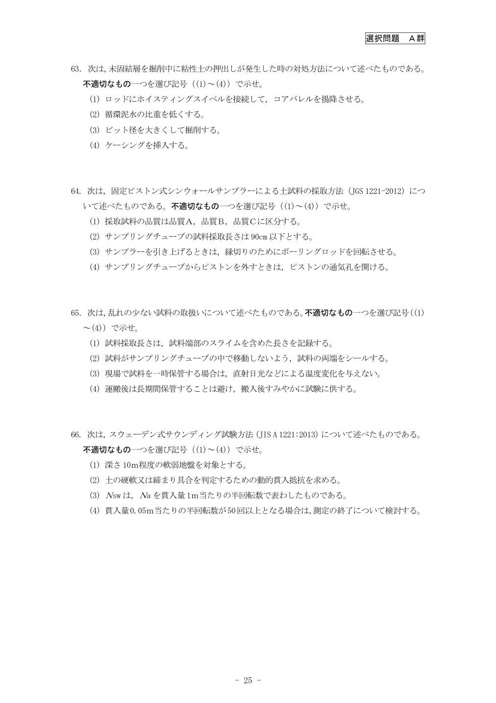
問64
A群（土質）
64. 次は，固定ピストン式シンウォールサンプラーによる土試料の採取方法（JGS 1221-2012）につ
いて述べたものである。不適切なもの一つを選び記号（(1)～(4)）で示せ。
(1) 採取試料の品質は品質Ａ，品質Ｂ，品質Ｃに区分する。
(2) サンプリングチューブの試料採取長さは90cm 以下とする。
(3) サンプラーを引き上げるときは，縁切りのためにボーリングロッドを回転させる。
(4) サンプリングチューブからピストンを外すときは，ピストンの通気孔を開ける。
正解(3) 土質千葉土質C21-1
図表・イラスト確認用：PDF紙面（25ページ）を表示
問65
A群（土質）
65． 次は，乱れの少ない試料の取扱いについて述べたものである。不適切なもの一つを選び記号（(1)
～(4)）で示せ。
(1) 試料採取長さは，試料端部のスライムを含めた長さを記録する。
(2) 試料がサンプリングチューブの中で移動しないよう，試料の両端をシールする。
(3) 現場で試料を一時保管する場合は，直射日光などによる温度変化を与えない。
(4) 運搬後は長期間保管することは避け，搬入後すみやかに試験に供する。
正解(1) 土質千葉土質C21-2
図表・イラスト確認用：PDF紙面（25ページ）を表示
問66
A群（土質）
66. 次は，スウェーデン式サウンディング試験方法（JIS A 1221:2013）について述べたものである。
不適切なもの一つを選び記号（(1)～(4)）で示せ。
(1) 深さ10ｍ程度の軟弱地盤を対象とする。
(2) 土の硬軟又は締まり具合を判定するための動的貫入抵抗を求める。
(3) Ｎsw は，Ｎa を貫入量1ｍ当たりの半回転数で表わしたものである。
(4) 貫入量0.05ｍ当たりの半回転数が50回以上となる場合は，測定の終了について検討する。
正解(2) 土質千葉土質C23
- 26 -
選択問題 Ａ群
図表・イラスト確認用：PDF紙面（25ページ）を表示
問67
A群（土質）
67. 次は，地盤の指標値を求めるためのプレッシャーメータ試験方法（JGS 1531-2012）について述
べたものである。不適切なもの一つを選び記号（(1)～(4)）で示せ。
(1) 試験は，ボーリング孔壁面が滑らかでかつ自立する地盤を対象とする。
(2) ゴムチューブのキャリブレーションは，空気中又は水中で最大測定範囲まで２回膨張させ
た後に行う。
(3) 地盤の指標値として地盤の変形係数，降伏圧力及び極限圧力を求める試験である。
(4) 孔壁圧力は，加圧部がゴムチューブを介して孔壁に加える載荷圧力である。
正解(2) 土質千葉土質C25
図表・イラスト確認用：PDF紙面（26ページ）を表示
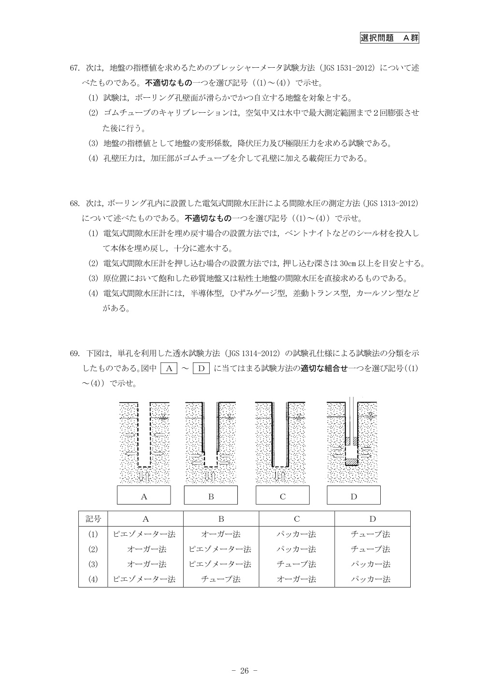
問68
A群（土質）
68. 次は，ボーリング孔内に設置した電気式間隙水圧計による間隙水圧の測定方法（JGS 1313-2012）
について述べたものである。不適切なもの一つを選び記号（(1)～(4)）で示せ。
(1) 電気式間隙水圧計を埋め戻す場合の設置方法では，ベントナイトなどのシール材を投入し
て本体を埋め戻し，十分に遮水する。
(2) 電気式間隙水圧計を押し込む場合の設置方法では，押し込む深さは30cm 以上を目安とする。
(3) 原位置において飽和した砂質地盤又は粘性土地盤の間隙水圧を直接求めるものである。
(4) 電気式間隙水圧計には，半導体型，ひずみゲージ型，差動トランス型，カールソン型など
がある。
解答（1） 土質西柳土質C27
図表・イラスト確認用：PDF紙面（26ページ）を表示
問69
A群（土質）
69. 下図は，単孔を利用した透水試験方法（JGS 1314-2012）の試験孔仕様による試験法の分類を示
したものである。図中 Ａ ～ Ｄ に当てはまる試験方法の適切な組合せ一つを選び記号（(1)
～(4)）で示せ。
記号
Ａ
Ｂ
Ｃ
Ｄ
(1)
(2)
(3)
(4)
ピエゾメーター法
オーガー法
オーガー法
ピエゾメーター法
オーガー法
ピエゾメーター法
ピエゾメーター法
チューブ法
パッカー法
パッカー法
チューブ法
オーガー法
チューブ法
チューブ法
パッカー法
パッカー法
正解 (3) 土質渡辺土質C28
Ａ
Ｃ
Ｄ
Ｂ
- 27 -
選択問題 Ａ群
図表・イラスト確認用：PDF紙面（26ページ）を表示
問70
A群（土質）
70. 次は，地盤の弾性波速度検層方法（JGS 1122-2012）について述べたものである。不適切なもの
一つを選び記号（(1)～(4)）で示せ。
(1) ダウンホール方式は，地表で板たたき等により起振して，孔内で受振する方法である。
(2) 孔内起振受振方式は，孔内で起振及び受振する方法であり，余掘りを必要とする。
(3) ダウンホール方式は，孔内水がないと測定できない。
(4) 孔内起振受振方式は，ダウンホール方式に比べてより深い深度までの測定が可能である。
正解（3）土質渡辺土質C29-2
図表・イラスト確認用：PDF紙面（27ページ）を表示
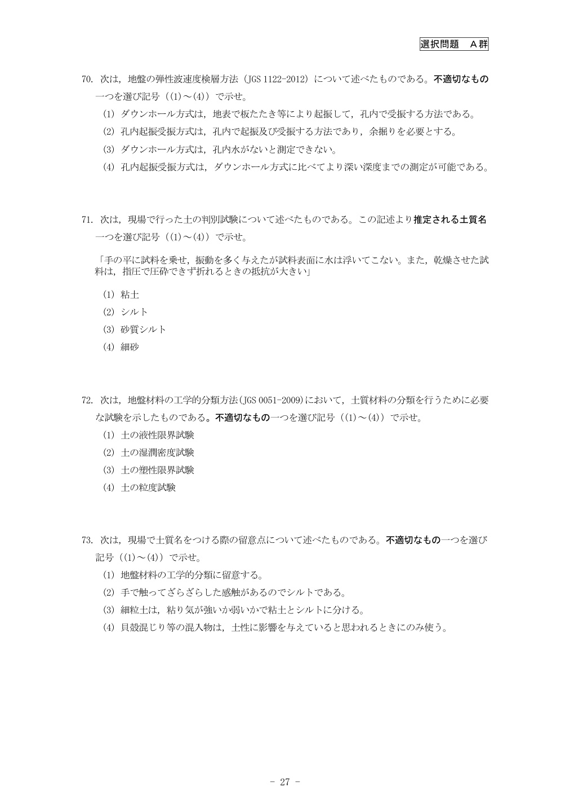
問71
A群（土質）
71. 次は，現場で行った土の判別試験について述べたものである。この記述より推定される土質名
一つを選び記号（(1)～(4)）で示せ。
「手の平に試料を乗せ，振動を多く与えたが試料表面に水は浮いてこない。また，乾燥させた試
料は，指圧で圧砕できず折れるときの抵抗が大きい」
(1) 粘土
(2) シルト
(3) 砂質シルト
(4) 細砂
正解 (1) 土質渡辺土質C31-1
図表・イラスト確認用：PDF紙面（27ページ）を表示
問72
A群（土質）
72. 次は，地盤材料の工学的分類方法(JGS 0051-2009)において，土質材料の分類を行うために必要
な試験を示したものである。不適切なもの一つを選び記号（(1)～(4)）で示せ。
(1) 土の液性限界試験
(2) 土の湿潤密度試験
(3) 土の塑性限界試験
(4) 土の粒度試験
正解 (2) 土質高田土質C31-4
図表・イラスト確認用：PDF紙面（27ページ）を表示
問73
A群（土質）
73. 次は，現場で土質名をつける際の留意点について述べたものである。不適切なもの一つを選び
記号（(1)～(4)）で示せ。
(1) 地盤材料の工学的分類に留意する。
(2) 手で触ってざらざらした感触があるのでシルトである。
(3) 細粒土は，粘り気が強いか弱いかで粘土とシルトに分ける。
(4) 貝殻混じり等の混入物は，土性に影響を与えていると思われるときにのみ使う。
正解 (2) 土質高田土質C31-6
- 28 -
選択問題 Ａ群
図表・イラスト確認用：PDF紙面（27ページ）を表示
問74
A群（土質）
74. 下図は，堆積構造を示したものである。 Ａ ～ Ｄ に当てはまる語句の適切な組合せ一つ
を選び記号（(1)～(4)）で示せ。
記号
Ａ
Ｂ
Ｃ
Ｄ
(1)
(2)
(3)
(4)
ブロック状
互層状
ブロック状
互層状
薄層状
レンズ状
薄層状
レンズ状
ポケット状
シーム状
レンズ状
ブロック状
レンズ状
ブロック状
互層状
薄層状
正解 (4) 土質渡辺土質C33-1
図表・イラスト確認用：PDF紙面（28ページ）を表示
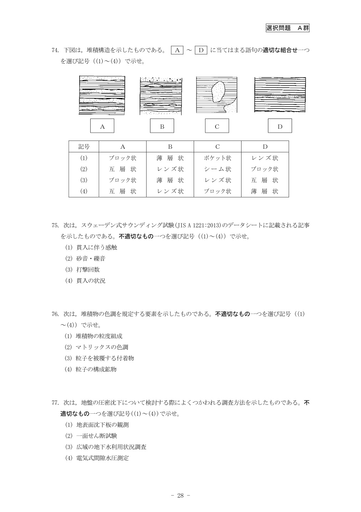
問75
A群（土質）
75. 次は，スウェーデン式サウンディング試験(JIS A 1221:2013)のデータシートに記載される記事
を示したものである。不適切なもの一つを選び記号（（1)～(4））で示せ。
(1) 貫入に伴う感触
(2) 砂音・礫音
(3) 打撃回数
(4) 貫入の状況
正解 (3) 土質高田土質C33-3
図表・イラスト確認用：PDF紙面（28ページ）を表示
問76
A群（土質）
76. 次は，堆積物の色調を規定する要素を示したものである。不適切なもの一つを選び記号（（1)
～(4））で示せ。
(1) 堆積物の粒度組成
(2) マトリックスの色調
(3) 粒子を被覆する付着物
(4) 粒子の構成鉱物
正解 (1) 土質高田土質C33-5
図表・イラスト確認用：PDF紙面（28ページ）を表示
問77
A群（土質）
77. 次は，地盤の圧密沈下について検討する際によくつかわれる調査方法を示したものである。不
適切なもの一つを選び記号((1)～(4))で示せ。
(1) 地表面沈下板の観測
(2) 一面せん断試験
(3) 広域の地下水利用状況調査
(4) 電気式間隙水圧測定
正解(2) 土質川井土質D05-1
Ａ
Ｂ
Ｃ
Ｄ
- 29 -
選択問題 Ａ群
図表・イラスト確認用：PDF紙面（28ページ）を表示
問78
A群（土質）
78. 次は，調査目的とその主な調査手法の組合せを示したものである。不適切な組合せ一つを選び
記号（(1)～(4)）で示せ。
記号
調査目的
主な調査方法
(1)
(2)
(3)
(4)
道路の舗装構成
横方向地盤反力
地盤の固有周波数
地盤の強度増加
CBR 試験
孔内載荷試験
繰返し非排水三軸試験
三軸圧縮試験(CU)
正解(3) 土質川井土質D05-2
図表・イラスト確認用：PDF紙面（29ページ）を表示
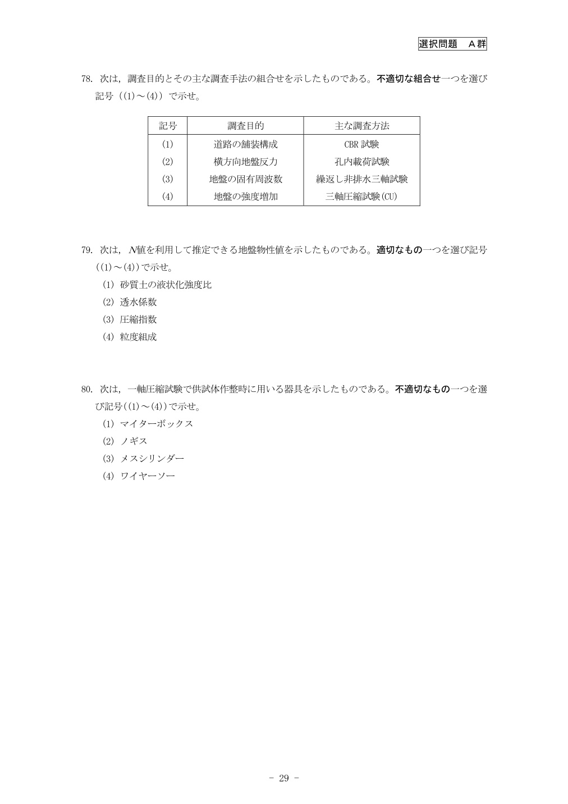
問79
A群（土質）
79. 次は，Ｎ値を利用して推定できる地盤物性値を示したものである。適切なもの一つを選び記号
((1)～(4))で示せ。
(1) 砂質土の液状化強度比
(2) 透水係数
(3) 圧縮指数
(4) 粒度組成
正解 (1) 土質川井土質D06
図表・イラスト確認用：PDF紙面（29ページ）を表示
問80
A群（土質）
80. 次は，一軸圧縮試験で供試体作整時に用いる器具を示したものである。不適切なもの一つを選
び記号((1)～(4))で示せ。
(1) マイターボックス
(2) ノギス
(3) メスシリンダー
(4) ワイヤーソー
解答：(3) 土質試験月館専門D11
- 30 -
選択問題 Ｂ群
選択問題Ｂ群：22問（主に岩盤に関連した分野；問81～問102）
現場技術の知識 １８問、調査技術の理解度 ４問
図表・イラスト確認用：PDF紙面（29ページ）を表示
問81
B群（岩盤）
81. 下図は，ダイアモンドコアビット（サーフェイスセットビット）を示したものである。空欄
Ａ ～ Ｄ に当てはまる名称の適切な組合せ一つを選び記号（（1)～(4））で示せ。
記号
Ａ
Ｂ
Ｃ
Ｄ
（1）
（2）
（3）
（4）
マトリックス
ヘッドストーン
マトリックス
ゲージトーン
ヘッドトーン
ゲージストーン
キッカーストーン
ヘッドストーン
ゲージストーン
キッカーストーン
ヘッドストーン
マトリックス
キッカーストーン
マトリックス
ゲージストーン
キッカーストーン
解答 (2) ボーリング土屋岩盤C01-3
図表・イラスト確認用：PDF紙面（30ページ）を表示
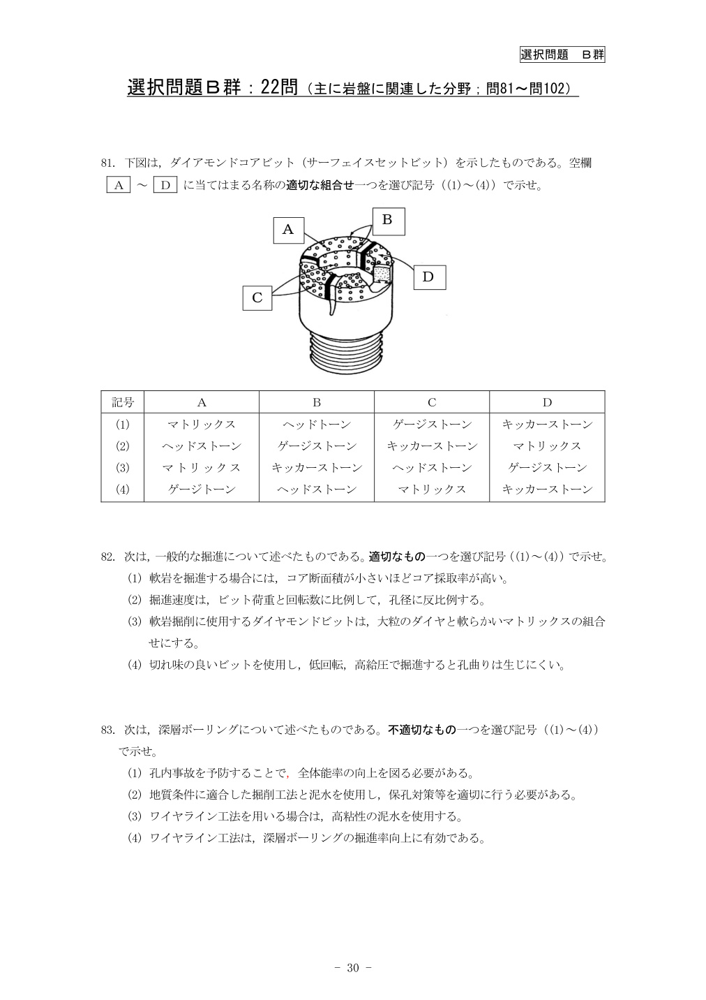
問82
B群（岩盤）
82. 次は，一般的な掘進について述べたものである。適切なもの一つを選び記号（(1)～(4））で示せ。
(1) 軟岩を掘進する場合には，コア断面積が小さいほどコア採取率が高い。
(2) 掘進速度は，ビット荷重と回転数に比例して，孔径に反比例する。
(3) 軟岩掘削に使用するダイヤモンドビットは，大粒のダイヤと軟らかいマトリックスの組合
せにする。
(4) 切れ味の良いビットを使用し，低回転，高給圧で掘進すると孔曲りは生じにくい。
正解（2）ボーリング湯川岩盤C07-3
図表・イラスト確認用：PDF紙面（30ページ）を表示
問83
B群（岩盤）
83. 次は，深層ボーリングについて述べたものである。不適切なもの一つを選び記号（(1)～(4)）
で示せ。
(1) 孔内事故を予防することで，全体能率の向上を図る必要がある。
(2) 地質条件に適合した掘削工法と泥水を使用し，保孔対策等を適切に行う必要がある。
(3) ワイヤライン工法を用いる場合は，高粘性の泥水を使用する。
(4) ワイヤライン工法は，深層ボーリングの掘進率向上に有効である。
正解 (3) ボーリング湯川岩盤C07-4
Ａ
Ｂ
Ｃ
Ｄ
- 31 -
選択問題 Ｂ群
図表・イラスト確認用：PDF紙面（30ページ）を表示
問84
B群（岩盤）
84. 次は，岩盤コアリングについて述べたものである。適切なもの一つを選び記号（(1)～(4)）で
示せ。
(1) コアが採取できれば，掘進時情報（掘進速度，地下水状況等）は必要ない。
(2) 岩種や地質構造の解明と岩盤状況を判定するためのものであり，室内土質試験とは無関係
である。
(3) 採取されたコアから得られる情報は，岩盤状況の判定に非常に重要な資料となる。
(4) 地層分布を地上から直接的に調査できる唯一の方法ではない。
正解（3） ボーリング湯川岩盤C08-3
図表・イラスト確認用：PDF紙面（31ページ）を表示
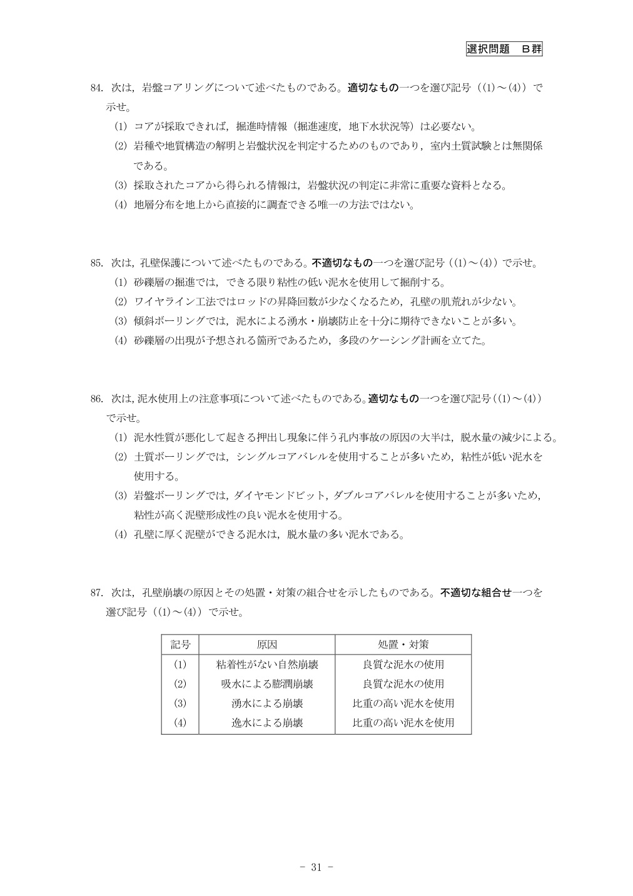
問85
B群（岩盤）
85. 次は，孔壁保護について述べたものである。不適切なもの一つを選び記号（(1)～(4)）で示せ。
(1) 砂礫層の掘進では，できる限り粘性の低い泥水を使用して掘削する。
(2) ワイヤライン工法ではロッドの昇降回数が少なくなるため，孔壁の肌荒れが少ない。
(3) 傾斜ボーリングでは，泥水による湧水・崩壊防止を十分に期待できないことが多い。
(4) 砂礫層の出現が予想される箇所であるため，多段のケーシング計画を立てた。
解答 (1) ボーリング沼宮内岩盤C09-2
図表・イラスト確認用：PDF紙面（31ページ）を表示
問86
B群（岩盤）
86. 次は，泥水使用上の注意事項について述べたものである。適切なもの一つを選び記号（(1)～(4)）
で示せ。
(1) 泥水性質が悪化して起きる押出し現象に伴う孔内事故の原因の大半は，脱水量の減少による。
(2) 土質ボーリングでは，シングルコアバレルを使用することが多いため，粘性が低い泥水を
使用する。
(3) 岩盤ボーリングでは，ダイヤモンドビット，ダブルコアバレルを使用することが多いため，
粘性が高く泥壁形成性の良い泥水を使用する。
(4) 孔壁に厚く泥壁ができる泥水は，脱水量の多い泥水である。
正解（4） ボーリング湯川岩盤C09-4
図表・イラスト確認用：PDF紙面（31ページ）を表示
問87
B群（岩盤）
87. 次は，孔壁崩壊の原因とその処置・対策の組合せを示したものである。不適切な組合せ一つを
選び記号（(1)～(4)）で示せ。
記号
原因
処置・対策
(1)
(2)
(3)
(4)
粘着性がない自然崩壊
吸水による膨潤崩壊
湧水による崩壊
逸水による崩壊
良質な泥水の使用
良質な泥水の使用
比重の高い泥水を使用
比重の高い泥水を使用
正解（4） ボーリング湯川岩盤C10-3
- 32 -
選択問題 Ｂ群
図表・イラスト確認用：PDF紙面（31ページ）を表示
問88
B群（岩盤）
88. 次は，工事で用いられるドライブヘッド型ドリルの特徴と用途の組合せを示したものである。
適切な組合せ一つを選び記号（(1)～(4)）で示せ。
記号
特徴
用途
(1)
駆動装置を搭載したスイベルヘッドがスライド移動し，
回転数，回転トルクが無段階に調整可能
トンネル先進調査
(2)
スイベルヘッドがドライブシャフトに沿ってスライド
移動し，強力な回転トルクを有する
トンネル先進調査
(3)
スイベルヘッドがドライブシャフトに沿ってスライド
移動し，強力な回転トルクを有する
温泉開発
地すべり防止抑止杭
(4)
駆動装置を搭載したスイベルヘッドがスライド移動し，
回転数，回転トルクが無段階に調整可能
温泉開発
地すべり防止抑止杭
解答 (3) ボーリング沼宮内岩盤C11-1
図表・イラスト確認用：PDF紙面（32ページ）を表示
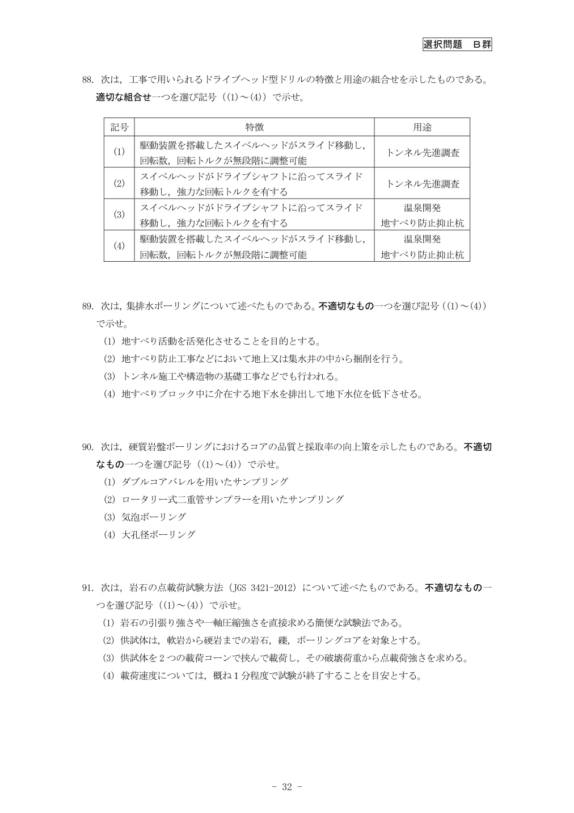
問89
B群（岩盤）
89. 次は，集排水ボーリングについて述べたものである。不適切なもの一つを選び記号（(1)～(4)）
で示せ。
(1) 地すべり活動を活発化させることを目的とする。
(2) 地すべり防止工事などにおいて地上又は集水井の中から掘削を行う。
(3) トンネル施工や構造物の基礎工事などでも行われる。
(4) 地すべりブロック中に介在する地下水を排出して地下水位を低下させる。
正解（1） ボーリング湯川岩盤C11-3
図表・イラスト確認用：PDF紙面（32ページ）を表示
問90
B群（岩盤）
90. 次は，硬質岩盤ボーリングにおけるコアの品質と採取率の向上策を示したものである。不適切
なもの一つを選び記号（(1)～(4)）で示せ。
(1) ダブルコアバレルを用いたサンプリング
(2) ロータリー式二重管サンプラーを用いたサンプリング
(3) 気泡ボーリング
(4) 大孔径ボーリング
解答(2) 岩盤西柳岩盤C21-2
図表・イラスト確認用：PDF紙面（32ページ）を表示
問91
B群（岩盤）
91. 次は，岩石の点載荷試験方法（JGS 3421-2012）について述べたものである。不適切なもの一
つを選び記号（(1)～(4)）で示せ。
(1) 岩石の引張り強さや一軸圧縮強さを直接求める簡便な試験法である。
(2) 供試体は，軟岩から硬岩までの岩石，礫，ボーリングコアを対象とする。
(3) 供試体を2 つの載荷コーンで挟んで載荷し，その破壊荷重から点載荷強さを求める。
(4) 載荷速度については，概ね１分程度で試験が終了することを目安とする。
解答(1) 岩盤西柳岩盤C26
- 33 -
選択問題 Ｂ群
図表・イラスト確認用：PDF紙面（32ページ）を表示
問92
B群（岩盤）
92. 下図は，ある岩盤で実施したルジオン試験における有効注水圧力と単位注水流量の関係を示し
たものである。この試験結果から読み取れる記載のうち，不適切なもの一つを選び記号（(1)～
(4)）で示せ。
(1) 同一の有効注水圧力では，昇圧時より降圧時の方で単位注水流量が増加している。
(2) 限界圧力が生じている。
(3) 換算ルジオン値は1.6 ルジオンである。
(4) ルジオン値は18.5 ルジオンである。
正解：(4) 岩盤西柳岩盤C28
図表・イラスト確認用：PDF紙面（33ページ）を表示
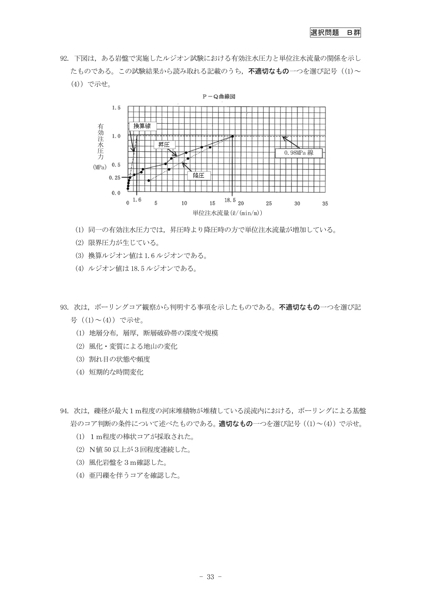
問93
B群（岩盤）
93. 次は，ボーリングコア観察から判明する事項を示したものである。不適切なもの一つを選び記
号（(1)～(4)）で示せ。
(1) 地層分布，層厚，断層破砕帯の深度や規模
(2) 風化・変質による地山の変化
(3) 割れ目の状態や頻度
(4) 短期的な時間変化
答え (4) 岩盤谷川岩盤C32-1
図表・イラスト確認用：PDF紙面（33ページ）を表示
問94
B群（岩盤）
94. 次は，礫径が最大１ｍ程度の河床堆積物が堆積している渓流内における，ボーリングによる基盤
岩のコア判断の条件について述べたものである。適切なもの一つを選び記号（(1)～(4)）で示せ。
(1) １ｍ程度の棒状コアが採取された。
(2) Ｎ値50 以上が３回程度連続した。
(3) 風化岩盤を３ｍ確認した。
(4) 亜円礫を伴うコアを確認した。
答え (３) 岩盤谷川岩盤C32-2
0.98MPa 線
単位注水流量（ℓ/(min/m)）
有
効
注
水
圧
力
(MPa)
- 34 -
選択問題 Ｂ群
図表・イラスト確認用：PDF紙面（33ページ）を表示
問95
B群（岩盤）
95. 次は，日本における火山岩類について述べたものである。不適切なもの一つを選び記号（(1)
～(4)）で示せ。
(1) 新第三紀の火山岩は，グリーンタフ地域に最も広く分布する。
(2) 新第三紀以降の火山岩・火山堆積物は，日本列島の地表部分のおおよそ50％を占める。
(3) 新第三紀，古第三紀の火山噴出物の多くは，玄武岩質～流紋岩質の火山岩類からなる。
(4) ハイアロクラスタイトとは，水冷破砕された火砕岩の一種である。
答え (2) 岩盤谷川岩盤C32-3
図表・イラスト確認用：PDF紙面（34ページ）を表示
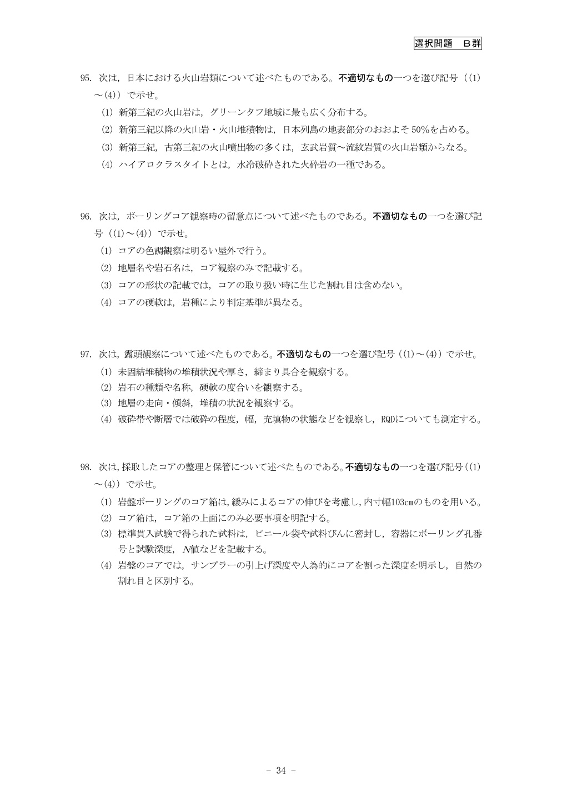
問96
B群（岩盤）
96. 次は，ボーリングコア観察時の留意点について述べたものである。不適切なもの一つを選び記
号（(1)～(4)）で示せ。
(1) コアの色調観察は明るい屋外で行う。
(2) 地層名や岩石名は，コア観察のみで記載する。
(3) コアの形状の記載では，コアの取り扱い時に生じた割れ目は含めない。
(4) コアの硬軟は，岩種により判定基準が異なる。
答え（2）岩盤谷川岩盤C33-1
図表・イラスト確認用：PDF紙面（34ページ）を表示
問97
B群（岩盤）
97. 次は，露頭観察について述べたものである。不適切なもの一つを選び記号（(1)～(4)）で示せ。
(1) 未固結堆積物の堆積状況や厚さ，締まり具合を観察する。
(2) 岩石の種類や名称，硬軟の度合いを観察する。
(3) 地層の走向・傾斜，堆積の状況を観察する。
(4) 破砕帯や断層では破砕の程度，幅，充填物の状態などを観察し，RQDについても測定する。
答え (4) 岩盤谷川岩盤C33-2
図表・イラスト確認用：PDF紙面（34ページ）を表示
問98
B群（岩盤）
98. 次は，採取したコアの整理と保管について述べたものである。不適切なもの一つを選び記号（(1)
～(4)）で示せ。
(1) 岩盤ボーリングのコア箱は，緩みによるコアの伸びを考慮し，内寸幅103㎝のものを用いる。
(2) コア箱は，コア箱の上面にのみ必要事項を明記する。
(3) 標準貫入試験で得られた試料は，ビニール袋や試料びんに密封し，容器にボーリング孔番
号と試験深度，Ｎ値などを記載する。
(4) 岩盤のコアでは，サンプラーの引上げ深度や人為的にコアを割った深度を明示し，自然の
割れ目と区別する。
答え (2) 岩盤谷川岩盤C33-3
- 35 -
選択問題 Ｂ群
図表・イラスト確認用：PDF紙面（34ページ）を表示
問99
B群（岩盤）
99. 下図は，地質平面図と地質断面図を示したものである。地質平面図中Ａ～Ｂの地質断面図とし
て，適切な図一つを選び記号（(1)～(4)）で示せ。
解答：(2) 岩盤都築岩盤D01
図表・イラスト確認用：PDF紙面（35ページ）を表示
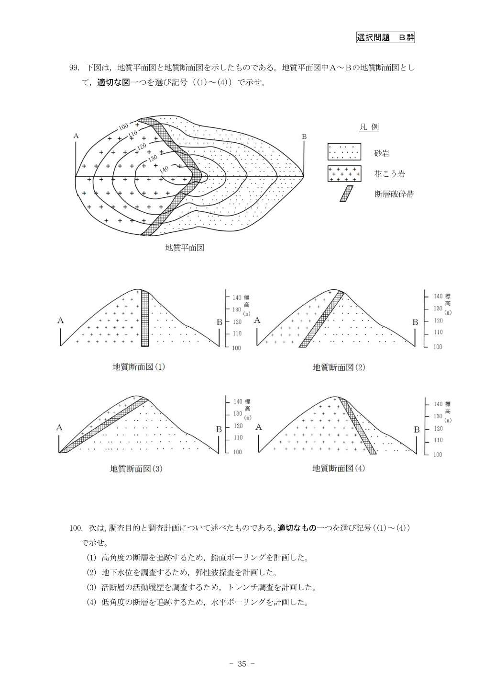
問100
B群（岩盤）
100. 次は，調査目的と調査計画について述べたものである。適切なもの一つを選び記号（(1)～(4)）
で示せ。
(1) 高角度の断層を追跡するため，鉛直ボーリングを計画した。
(2) 地下水位を調査するため，弾性波探査を計画した。
(3) 活断層の活動履歴を調査するため，トレンチ調査を計画した。
(4) 低角度の断層を追跡するため，水平ボーリングを計画した。
解答：(3) 岩盤谷川岩盤D05
A 凡 例
砂岩
花こう岩
断層破砕帯
地質平面図
- 36 -
選択問題 Ｂ群
図表・イラスト確認用：PDF紙面（35ページ）を表示
問101
B群（岩盤）
101. 次は，付加体の地質について述べたものである。不適切なもの一つを選び記号（(1)～(4)）で
示せ。
(1) プレート運動による産物として形成される。
(2) 断層や割れ目が多く発達しており，緩みが生じやすいので，注意すべき地質である。
(3) 石灰岩や玄武岩などをブロック状に含むことがある。
(4) 付加体地質は，混在相のみで構成される。
解答：（4）岩盤都築岩盤D06
図表・イラスト確認用：PDF紙面（36ページ）を表示
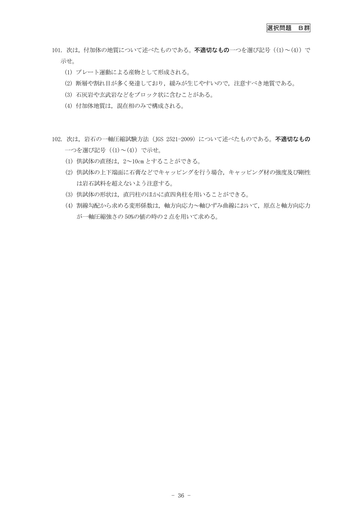
問102
B群（岩盤）
102. 次は，岩石の一軸圧縮試験方法（JGS 2521-2009）について述べたものである。不適切なもの
一つを選び記号（(1)～(4)）で示せ。
(1) 供試体の直径は，2～10cm とすることができる。
(2) 供試体の上下端面に石膏などでキャッピングを行う場合，キャッピング材の強度及び剛性
は岩石試料を超えないよう注意する。
(3) 供試体の形状は，直円柱のほかに直四角柱を用いることができる。
(4) 割線勾配から求める変形係数は，軸方向応力～軸ひずみ曲線において，原点と軸方向応力
が一軸圧縮強さの50%の値の時の2 点を用いて求める。
解答：(2)土質試験月館専門D12
- 37 -
必須問題
Ⅶ．記述式問題 (2問)
以下の問いに対する解答を答案用紙（その２）に記述せよ。
第１問
ボーリングは，一般に泥水を送って地盤を掘進する。良好な泥水の備えるべき条件を
４つ記述せよ。
第２問
ボーリングの検尺を行うにあたり，現地で黒板及びコアバレル，ロッドに記す内容を記述せよ。
ただし，検尺時の掘削長やロッドの本数などの条件は次の通りとし，記述すること。
〈掘削長などの条件〉
・1.3ｍ長のコアバレル
・3.0ｍ長のロッドを５本
・掘進長14.5ｍで終了
（黒板イメージ）
（コアバレル，ロッド イメージ）
※解答は答案用紙（その２）に記載すること
コアバレル
ロッド
スケール